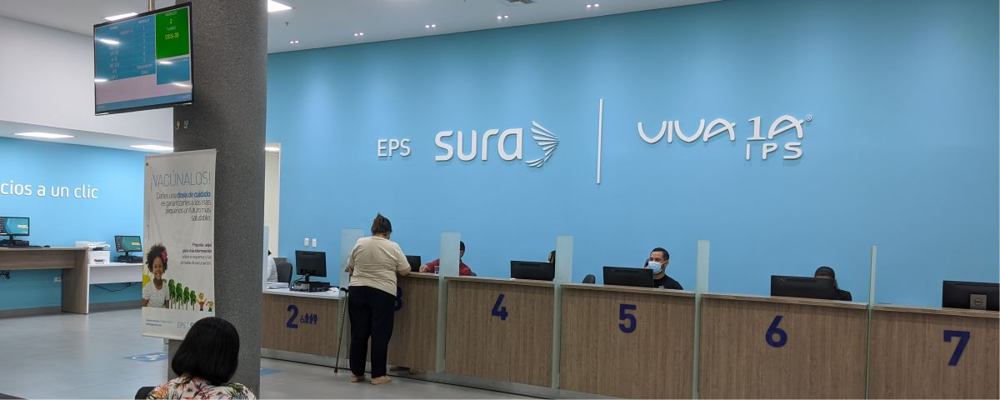

- Búsqueda de Códigos
| Código | Nombre |
|---|---|
| 903401 | ADENOSIN DEAMINASA [ADA] |
| 901205 | CLOSTRIDIUM DIFFICILE, CULTIVO |
| 906744 | LINFOCITOS T, CUANTIFICACION CD3, CD4, CD8 POR CITOMETRIA DE FLUJO |
| 898033 | ESTUDIO DE RECEPTORES HORMONALES EN CITOLOGÍA § |
| 906915 | SEROLOGÍA [PRUEBA NO TREPOMENICA] VDRL EN SUERO O LCR |
| 898801 | ESTUDIO POR CONGELACION § |
| 898002 | ESTUDIO DE COLORACION BASICA EN CITOLOGIA DE LIQUIDO CORPORAL O SECRECION+ |
| 898301 | AUTOPSIA [NECROPSIA] COMPLETA * + |
| 906915 | SEROLOGÍA [PRUEBA NO TREPONEMICA] RPR &+ |
| 881360 | ULTRASONOGRAFIA PELVICA TRANSABDOMINAL (NO OBSTETRICA) CON ANALISIS DOPPLER ACR |
| 908441 | FACTOR DE LEIDEN MUTACION |
| 903439 | TROPONINA T, CUANTITATIVA + |
| 904106 | HORMONA FOLÍCULO ESTIMULANTE Y HORMONA LUTEINIZANTE PRE Y POST HORMONA LIBERADORA DE GONADOTROPINA + |
| 911017 | HEMOCLASIFICACIÓN GRUPO ABO, DIRECTA O GLOBULAR POR MICROTÉCNICA + |
| 898002 | CITOLOGIA DE LIQUIDOS (PLEURAL, GASTRI |
| 908441 | MUTACION FACTOR V DE LEIDEN |
| 906744 | LINFOCITOS T, CUANTIFICACION CD3, CD4,CD8 |
| 672001 | CONIZACION NCOC + |
| 673401 | CONIZACION CON RADIOFRECUENCIA (LETZ) BAJO COLPOSCOPIA |
| 261100 | BIOPSIA CERRADA [PUNCIÓN] [ASPIRACION CON AGUJA FINA] DE GLÁNDULA O CONDUCTO SALIVAL SOD |
| 261200 | BIOPSIA ABIERTA DE GLANDULA O CONDUCTO SALIVAL SOD |
| 261201 | BIOPSIA ESCISIONAL DE GLANDULA SALIVAL MENOR (CON CONDUCTO SALIVAL) |
| 61100 | BIOPSIA POR ASPIRACION [PERCUTANEA] DE TIROIDES (AGUJA FINA O TRU CUT) |
| 401101 | BIOPSIA DE GANGLIO LINFATICO SUPERFICIAL |
| 860102 | BIOPSIA INCISIONAL O ESCISIONAL DE PIEL, TEJIDO CELULAR SUBCUTANEO O MUCOSA (CON SUTURA) |
| 851101 | BIOPSIA POR PUNCIÓN CON AGUJA FINA DE MAMA |
| 17921 | BIOPSIA DE MAMA ESTEREOTAXICA |
| 17922 | BIOPSIA DE MAMA DIRIGIDA POR AGUJA FINA (BACAF) |
| 17923 | BIOPSIA DE MAMA POR TRUCUT GUIADA POR ECO |
| 17924 | BIOPSIA DE MAMA GUIADA POR ECOGRAFIA |
| 17926 | BIOPSIA DE TIROIDES POR AGUJA FINA (BACAF) |
| 17927 | BIOPSIA DE TIROIDES GUIADA POR ECOGRAFIA |
| 422200 | ESOFAGOSCOPIA A TRAVES DE ESTOMA ARTIFICIAL SOD |
| 451600 | ESOFAGOGASTRODUODENOSCOPIA [EGD] CON BIOPSIA CERRADA SOD |
| 482200 | PROCTOSIGMOIDOSCOPIA A TRAVES DE ESTOMA ARTIFICIAL SOD |
| 492100 | ANOSCOPIA SOD |
| 452401 | SIGMOIDOSCOPIA FLEXIBLE O RIGIDA + |
| 482301 | PROCTOSIGMOIDOSCOPIA RIGIDA O FLEXIBLE + |
| 469700 | EXTRACCIÓN ENDOSCÓPICA DE CUERPO EXTRAÑO EN INTESTINO SOD § |
| 452302 | COLONOSCOPIA IZQUIERDA CON EQUIPO FLEXIBLE + |
| 452301 | COLONOSCOPIA TOTAL § |
| 702201 | COLPOSCOPIA CON BIOPSIA |
| 702110 | VAGINOSCOPIA CON INSTRUMENTO OPTICO (EN NIÑAS) |
| 7022011 | COLPOSCOPIA CON BIOPSIA (DETECCION TEMPRANA DE CA DE CERVIX) |
| 905701 | ACETAMINOFEN, CUANTITATIVA EN SANGRE U ORINA POR CUALQUIER TECNICA |
| 905702 | ACETAMINOFEN, SEMICUANTITATIVA EN SANGRE U ORINA POR CUALQUIER TECNICA |
| 903101 | ACIDOS BILIARES + |
| 903104 | ÁCIDO DELTA AMINOLEVULÍNICO [ALA] EN ORINA DE 24 H + |
| 903105 | ÁCIDO FÓLICO [FOLATOS] EN SUERO + |
| 903103 | ÁCIDO 5 HIDROXI INDOLACÉTICO EN ORINA DE 24 H + |
| 903111 | ACIDO LACTICO [L-LACTATO] POR METODO ENZIMATICO |
| 903110 | ÁCIDO LÁCTICO [L-LACTATO] POR FLUOROMETRÍA + |
| 903801 | ÁCIDO ÚRICO |
| 905201 | ACIDO VALPROICO |
| 903113 | ÁCIDO VANILMANDÉLICO [VMA] EN ORINA DE 24 H + |
| 907104 | RECUENTO DE ADDIS + |
| 904103 | HORMONA ADRENOCORTICOTRÓPICA [ACTH] |
| 906901 | AGLUTININAS AL FRIO |
| 902002 | AGREGACIÓN PLAQUETARIA, CADA AGENTE |
| 901103 | COLORACIÓN ALBERT [LOEFFLER] Y LECTURA+ |
| 903803 | ALBÚMINA |
| 905703 | ALCALOIDES, CUANTITATIVA EN SANGRE U ORINA POR CUALQUIER TECNICA |
| 905704 | ALCALOIDES, SEMICUANTITATIVO EN SANGRE U ORINA POR CUALQUIER TECNICA |
| 905705 | ALCOHOL ETÍLICO EN CUALQUIER MUESTRA POR CUALQUIER TECNICA |
| 905706 | ALCOHOL ETILICO EN CUALQUIER MUESTRA POR CUALQUIER TECNICA |
| 905707 | ALCOHOL METÍLICO (FORMALDEHIDO) EN CUALQUIER MUESTRA |
| 903402 | ALDOLASA |
| 904801 | ALDOSTERONA |
| 903406 | ALFA 1 ANTITRIPSINA POR CUALQUIER TECNICA |
| 903405 | ALFA 1 ANTITRIPSINA POR IDR |
| 903407 | ALFA 1 GLICOPROTEÍNA ÁCIDA U OROMUCOIDE |
| 903001 | ALFA 2 MACROGLOBULINA |
| 906602 | ALFA FETOPROTEÍNA [AFP] SÉRICA |
| 905759 | SUSTANCIAS ALUCINÓGENAS (LSD, MESCALINA Y OTRAS) |
| 905401 | AMIKACINA, CUANTITATIVA POR CUALQUIER TECNICA |
| 905403 | AMIKACINA, SEMICUANTITATIVA POR CUALQUIER TECNICA |
| 905402 | AMIKACINA, CUANTITATIVA POR CUALQUIER TECNICA |
| 903805 | AMILASA |
| 906807 | ELECTROFORESIS DE AMINOACIDOS EN ORINA + |
| 9053031 | NIVELES CUANTITATIVOS DE AMITRIPTILINA SERICA O EN ORINA OCASIONAL |
| 903602 | AMONIO |
| 904501 | ANDROSTENEDIONA |
| 904502 | ANDROSTERONA EN ORINA |
| 901001 | ANTIBIOGRAMA (DISCO) |
| 902004 | ANTICOAGULANTE CIRCULANTE [LÚPICO] |
| 906408 | CARDIOLIPINA, ANTICUERPOS IG G POR EIA |
| 906413 | CENTRÓMERO, ANTICUERPOS POR IFI + |
| 906417 | DNA N, ANTICUERPOS POR EIA + |
| 906418 | DNA NATIVO, ANTICUERPOS POR CUALQUIER TECNICA |
| 906419 | ESPERMA O ESPERMATOZOIDES, ANTICUERPOS POR CITOMETRÍA DE FLUJO + |
| 906420 | ESPERMA O ESPERMATOZOIDES, ANTICUERPOS POR EIA |
| 906432 | MITOCONDRIA, ANTICUERPOS [AMA] POR EIA + |
| 906433 | MITOCONDRIA, ANTICUERPOS [AMA] POR CUALQUIER TECNICA |
| 906434 | MITOCONDRIA, ANTICUERPOS [AMA] POR CUALQUIER TECNICA |
| 906436 | MÚSCULO LISO, ANTICUERPOS [ASMA] POR EIA + |
| 906437 | MUSCULO LISO, ANTICUERPOS [ASMA] POR CUALQUIER TECNICA |
| 906438 | MUSCULO LISO, ANTICUERPOS [ASMA] POR IHA |
| 906439 | MUSCULO LISO, ANTICUERPOS [ASMA] POR CUALQUIER TECNICA |
| 19095 | ANTICUERPOS IRREGULARES |
| 906440 | NUCLEARES, ANTICUERPOS [ANA] POR EIA + |
| 906441 | NUCLEARES, ANTICUERPOS [ANA] POR CUALQUIER TECNICA |
| 906442 | NUCLEARES, ANTICUERPOS [ANA] POR CUALQUIER TECNICA |
| 906406 | ANTICUERPOS NUCLEARES EXTRACTABLES TOTALES [ENA] SS-A [RO] SS-B [LA] RNP Y SM + |
| 906443 | PLAQUETARIOS, ANTICUERPOS + |
| 906448 | PM1, ANTICUERPOS ASOCIADOS A POLIMIOSITIS + |
| 906449 | PM2, ANTICUERPOS + |
| 906447 | PM/SCL, ANTICUERPOS + |
| 19109 | ANTICUERPOS ANTI RNR Y SM O RO Y LA |
| 906455 | SCL 70, ANTI ESCLERODERMA, ANTICUERPOS POR EIA + |
| 906454 | RO/SSA, ANTICUERPOS POR EIA + |
| 906430 | LA/SSB, ANTICUERPOS POR EIA + |
| 906457 | TIROIDEOS COLOIDALES, ANTICUERPOS + |
| 906458 | TIROIDEOS MICROSOMALES, ANTICUERPOS POR EIA + |
| 906459 | TIROIDEOS MICROSOMALES, ANTICUERPOS POR IFI |
| 906460 | TIROIDEOS MICROSOMALES, ANTICUERPOS POR IHA |
| 906461 | TIROIDEOS MICROSOMALES, ANTICUERPOS POR RIA |
| 906463 | TIROIDEOS TIROGLOBULÍNICOS, ANTICUERPOS POR EIA + |
| 906464 | TIROIDEOS TIROGLOBULINICOS, ANTICUERPOS POR IFI |
| 906465 | TIROIDEOS TIROGLOBULINICOS, ANTICUERPOS POR IHA |
| 906510 | HLA CITOTOXICOS ANTICUERPOS POR SEROLOGIA O CROSS MATCH |
| 906903 | ANTICUERPOS HETERÓFILOS [ESPECÍFICOS Y TOTALES] + |
| 19127 | ANTICUERPOS HETEROFILOS TOTALES |
| 19128 | ANTIESTREPTOLISINAS O. PRUEBA CUALITATIVA |
| 906001 | ANTIESTREPTOLISINA O CUANTITATIVA POR NEFELOMETRÍA |
| 906002 | ANTIESTREPTOLISINA O CUANTITATIVA POR TITULACIÓN |
| 906604 | ANTÍGENO DE CÁNCER DE MAMA [CA 15-3] + |
| 906606 | ANTÍGENO DE CÁNCER DE TUBO DIGESTIVO [CA 19-9] + |
| 906605 | ANTÍGENO DE CÁNCER DE OVARIO [CA 125] + |
| 906603 | ANTÍGENO CARCINOEMBRIONARIO [ACE-CEA] + |
| 906610 | ANTÍGENO ESPECÍFICO DE PROSTATA [PSA] + |
| 906304 | ANTÍGENOS FEBRILES [VIDAL O WEIL FELIX] + |
| 906303 | ANTÍGENOS BACTERIANOS EN L.C.R, SANGRE U OTRA MUESTRA, PRUEBA DIRECTA [POLIVALENTE PARA MENINGITIS] + |
| 902009 | ANTITROMBINA III POR NEFELOMETRIA |
| 902006 | ANTITROMBINA III POR COAGULACIÓN |
| 902007 | ANTITROMBINA III POR CROMÓGENOS |
| 905709 | ARSÉNICO EN ORINA O SANGRE POR CUALQUIER TECNICA |
| 907001 | AZUCARES REDUCTORES EN HECES + |
| 901101 | COLORACIÓN ACIDO ALCOHOL RESISTENTE [ZIELH-NIELSEN] Y LECTURA O BACILOSCOPIA * |
| 905203 | BARBITÚRICOS, CUANTITATIVO POR CROMATOGRAFÍA DE GASES O LÍQUIDA |
| 905204 | BARBITURICOS, SEMICUANTITATIVO POR INMUNOENSAYO< /O:P> |
| 905306 | BENZODIACEPINAS, SEMICUANTITATIVA POR CROMATOGRAFIA DE CAPA DELGADA E INMUNOENSAYO |
| 906620 | BETA 2 MICROGLOBULINA EN CUALQUIER MUESTRA + |
| 906625 | GONADOTROPINA CORIÓNICA, SUBUNIDAD BETA CUANTITATIVA [BHCG] + |
| 19169 | BILIRRUBINA DIRECTA |
| 19170 | BILIRRUBINA TOTAL |
| 9057361 | DETERMINACION DE NIVELES DE CADMIO EN CUALQUIER MUESTRA |
| 905714 | CAFEÍNA, CUANTITATIVA POR CUALQUIER TECNICA |
| 903810 | CALCIO |
| 906621 | CALCITONINA + |
| 903004 | CÁLCULO BILIAR, ANÁLISIS FÍSICO-QUÍMICO CUANTITATIVO + |
| 903005 | CÁLCULO RENAL, ANÁLISIS FÍSICO-QUÍMICO CUANTITATIVO + |
| 906802 | CAMPO OSCURO PARA CUALQUIER MUESTRA |
| 905717 | CANNABINOIDES, SEMICUANTITATIVA POR CUALQUIER TECNICA |
| 905206 | CARBAMAZEPINA, CUANTITATIVA POR CUALQUIER TECNICA |
| 905207 | CARBAMAZEPINA, SEMICUANTITATIVA POR CUALQUIER TECNICA |
| 905737 | MONÓXIDO DE CARBONO [CARBOXIHEMOGLOBINA] CUANTITATIVA POR CUALQUIER TECNICA |
| 902101 | CÉLULAS L.E. |
| 908832 | VIH, CARGA VIRAL CUALQUIER TÉCNICA + |
| 908802 | VIRUS DE INMUNODEFICIENCIA HUMANA GENOTIPO |
| 903417 | CERULOPLASMINA EN SANGRE POR CUALQUIER TECNICA |
| 903416 | CERULOPLASMINA POR IDR |
| 905720 | CIANUROS, CUANTITATIVO POR CUALQUIER TECNICA |
| 905721 | CIANUROS, SEMICUANTITATIVO POR CUALQUIER TECNICA |
| 905502 | CICLOSPORINA A Y METABOLITOS |
| 906205 | CITOMEGALOVIRUS, ANTICUERPOS IG G [CMV-G] POR EIA + |
| 906206 | CITOMEGALOVIRUS, ANTICUERPOS IG M [CMV-M] POR EIA + |
| 906021 | CHLAMYDIA TRACHOMATIS, ANTICUERPOS TOTALES |
| 906307 | CHLAMYDIA TRACHOMATIS, ANTÍGENO POR CUALQUIER TECNICA |
| 906308 | CHLAMYDIA TRACHOMATIS, ANTÍGENO POR CUALQUIER TECNICA |
| 905307 | CLORPROMAZINA + |
| 903813 | CLORO [CLORURO] |
| 902043 | TIEMPO DE COAGULACIÓN |
| 902041 | RETRACCIÓN DE COÁGULO |
| 9057362 | DETERMINACION DE NIVELES DE COBRE EN SANGRE |
| 905725 | COCAINA, METABOLITOS EN ORINA |
| 905726 | COCAINA, SEMICUANTITATIVA POR CUALQUIER TECNICA |
| 906111 | COCCIDIOIDES, ANTICUERPOS + |
| 903815 | COLESTEROL DE ALTA DENSIDAD [HDL] |
| 903816 | COLESTEROL DE BAJA DENSIDAD [LDL] ENZIMÁTICO |
| 903818 | COLESTEROL TOTAL |
| 903419 | COLINESTERASA EN ERITROCITOS [VERDADERA O ACETILCOLINESTERASA] * |
| 903420 | COLINESTERASA SÉRICA [SEUDOCOLINESTERASA] |
| 901102 | COLORACIÓN ÁCIDO ALCOHOL RESISTENTE MODIFICADA Y LECTURA *+ |
| 906904 | COMPLEMENTO HEMOLÍTICO AL 50% [CH 50] + |
| 902201 | COOMBS DIRECTO, PRUEBA CUALITATIVA |
| 911009 | COO MBS DIRECTO, CUALITATIVO POR MICROTECNICA |
| 911010 | COOMBS DIRECTO, CUALITATIVO POR TUBO |
| 9110030 | COOMBS INDIRECTO, PRUEBA CUALITATIVA |
| 9110031 | COOMBS INDIRECTO, PRUEBA CUANTITATIVA |
| 901206 | COPROCULTIVO |
| 907002 | COPROLÓGICO + |
| 907003 | COPROLÓGICO POR CONCENTRACIÓN + |
| 903421 | COPROPORFIRINAS EN ORINA DE 24 H POR CUALQUIER TECNICA |
| 907004 | COPROSCÓPICO + |
| 904811 | HIDROXICORTICOSTEROIDES, 17 [17 OHCS] |
| 903822 | CREATINA |
| 903821 | CREATIN QUINASA TOTAL CK- CPK |
| 903819 | CREATIN QUINASA [FRACCIÓN MB] POR ESPECTOFOTOMETRÍA |
| 904805 | CORTISOL |
| 903823 | CREATININA DEPURACIÓN (INCLUYE LA DETERMINACION CONCOMITANTE DE CREATININA SERICA) |
| 903895 | CREATININA EN SUERO, ORINA U OTROS |
| 904104 | HORMONA DE CRECIMIENTO O SOMATOTRÓPICA |
| 906909 | CRIOGLOBULINAS + |
| 19295 | CRIOGLOBULINAS |
| 906112 | CRYPTOCOCCUS NEOFORMANS, ANTICUERPOS POR LÁTEX |
| 906314 | CRYPTOCOCCUS NEOFORMANS, ANTÍGENO + |
| 901208 | CRYPTOCOCCUS NEOFORMANS, CULTIVO |
| 902207 | HEMOGRAMA I [HEMOGLOBINA, HEMATOCRITO Y LEUCOGRAMA] METODO MANUAL + |
| 902209 | HEMOGRAMA COMPLETO [HEMOGLOBINA, HEMATOCRITO, RECUENTO DE ERITROCITOS, ÍNDICES ERITROCITARIOS, LEUCOGRAMA, RECUENTO DE PLAQUETAS, INDICES PLAQUETARIOS Y MORFOLOGIA ELECTRONICA E HISTOGRAMA] MÉTODO AUTOMÁTICO |
| 902208 | HEMOGRAMA II [HEMOGLOBINA, HEMATOCRITO, RECUENTO DE ERITROCITOS, INDICES ERITROCITARIOS, LEUCOGRAMA, RECUENTO DE PLAQUETAS E INDICES PLAQUETARIOS] MÉTODO MANUAL Y SEMIAUTOMATICO |
| 193031 | HEMOGRAMA TIPO V (HEMOGLOBINA, HEMATOCRITO, ROJOS, ÍNDICES ERITROCITARIOS, ANCHO DE DISTRIBUCIÓN DE LOS ERITROCITOS, RECUENTO TOTAL Y DIFERENCIAL DE LEUCOCITOS DE CINCO LÍNEAS, PLAQUETAS Y VOLUMEN MEDIO PLAQUETARIO POR MÉTODOS ELECTRÓNICOS Y MORFOLOGÍA, P |
| 902102 | CUERPOS DE HEINZ, PRUEBA DIRECTA |
| 901218 | CULTIVO PARA MICROORGANISMOS ANAEROBIOS DE CUALQUIER MUESTRA DIFERENTE A MEDULA OSEA |
| 901213 | CULTIVO PARA HONGOS MICOSIS SUPERFICIAL |
| 901230 | MYCOBACTERIUM TUBERCULOSIS, CULTIVO * |
| 901231 | MYCOPLASMA, CULTIVO+ |
| 901217 | CULTIVO PARA MICROORGANISMOS EN CUALQUIER MUESTRA DIFERENTE A MEDULA OSEA, ORINA Y HECES (PIEL O TEJIDO) |
| 901210 | CULTIVO ESPECIALES PARA OTROS MICROORGANISMOS |
| 902003 | AGREGACIÓN PLAQUETARIA, CURVA |
| 903844 | GLUCOSA, CURVA DE TOLERANCIA + |
| 904808 | DEHIDROEPINANDROSTERONA |
| 904809 | DEHIDROEPINANDROSTERONA SULFATO [EPINANDROSTERONA -DHEA-SO4] |
| 906208 | DENGUE, ANTICUERPOS IG M |
| 906207 | DENGUE, ANTICUERPOS IG G |
| 903828 | DESHIDROGENASA LÁCTICA [LDH] |
| 903829 | DESHIDROGENASA LÁCTICA, ISOENZIMAS |
| 9053032 | NIVELES CUANTITATIVOS DE DESIPRAMINA SERICA O EN ORINA OCASIONAL |
| 905601 | DIGITOXINA, CUANTITATIVA EN SANGRE U ORINA CUALQUIER TECNICA |
| 905604 | DIGOXINA, CUANTITATIVA EN SANGRE U ORINA CUALQUIER TECNICA |
| 905605 | DIGOXINA, SEMICUANTITATIVA EN SANGRE U ORINA POR CUALQUIER TECNICA |
| 902121 | PRUEBA DE CICLAJE [CÉLULAS FALCIFORMES O DREPANOCITOS] |
| 903423 | D- XILOSA, PRUEBA DE ABSORCIÓN |
| 901303 | ESCHERICHIA COLI ENTEROPATÓGENA, EN MATERIA FECAL POR SEROTIPIFICACIÓN+ |
| 904508 | GONADOTROPINA CORIÓNICA, SUBUNIDAD BETA CUALITATIVA, [BHCG] PRUEBA DE EMBARAZO EN ORINA O SUERO + |
| 193561 | TAMIZAJE PIE |
| 906113 | ENTAMOEBA HISTOLÍTICA, ANTICUERPOS POR EIA + |
| 906114 | ENTAMOEBA HISTOLÍTICA, ANTICUERPOS POR INMUNODIFUSION |
| 906210 | ENTEROVIRUS, ANTICUERPOS + |
| 902218 | RECUENTO DE EOSINOFILO EN CUALQUIER MUESTRA + |
| 902219 | RECUENTO DE EOSINOFILO EN MOCO NASAL POR COLORACIÓN DE HAN |
| 905710 | ATROPÍNICOS, CUANTITATIVA POR CUALQUIER TECNICA |
| 905711 | ATROPÍNICOS, SEMICUANTITATIVO POR CUALQUIER TECNICA |
| 907201 | ESPERMOGRAMA BÁSICO |
| 903013 | ESPERMOGRAMA CON BIOQUÍMICA + |
| 903014 | ESTERASA PANCREÁTICA, ENZIMA ALFA NAFTIL-BUTIRATO + |
| 904804 | CETOESTEROIDES 17 |
| 904503 | ESTRADIOL |
| 905728 | ESTRIGNINA, CUANTITATIVA POR CUALQUIER TECNICA |
| 905729 | ESTRIGNINA, SEMICUANTITATIVA POR CUALQUIER TECNICA |
| 904504 | ESTRIOL + |
| 904506 | ESTRÓGENOS [ESTRADIOL 17 BETA] + |
| 905208 | ETOSUXIMIDA, CUANTITATIVA POR CROMATOGRAFÍA LÍQUIDA O DE GASES |
| 902015 | FACTOR III PLAQUETARIO |
| 906910 | FACTOR REMATOIDEO [R.A.] CUANTITATIVO |
| 906911 | FACTOR REMATOIDEO [R.A.] SEMICUANTITATIVO POR LÁTEX + |
| 911016 | HEMOCLASIFICACION FACTOR RH [FACTOR D] EN LAMINA O TUBO |
| 911015 | HEMOCLASIFICACION FACTOR RH [FACTOR D] POR MICROTECNICA |
| 911014 | FENOTIPAGE, FACTOR RH [C, C, E, E] EN LAMINA O TUBO |
| 911013 | FENOTIPAGE, FACTOR RH [C, C, E, E] POR MICROTÉCNICA + |
| 902016 | FACTOR V DE LA COAGUALCIÓN [LÁBIL O PROACELERINA] |
| 902012 | FACTOR II DE LA COAGULACIÓN, CUANTIFICACIÓN [PROTROMBINA] |
| 902017 | FACTOR VII DE LA COAGULACIÓN [ESTABLE O PROCONVERTINA] |
| 902018 | FACTOR VIII DE LA COAGULACIÓN |
| 902014 | FACTOR IX DE LA COAGULACIÓN [CHRISTMAS O PTC] |
| 902020 | FACTOR X [STUART POWER] |
| 902021 | FACTOR XI [PTA] |
| 902022 | FACTOR XII [FACTOR DE HAGEMAN, DE CONTACTO] |
| 902023 | FACTOR XIII [FSF, FACTOR ESTABILIZANTE DE LA FIBRINA O TIEMPO DE LISIS COÁGULO] |
| 902019 | FACTOR VON WILLEBRAND |
| 911026 | VARIANTE A1 - A2 Y OTROS LIGADOS A LOS GRUPOS SANGUÍNEOS [SUBGRUPO] EN PLACA O TUBO |
| 911025 | VARIANTE A1 - A2 Y OTROS LIGADOS A LOS GRUPOS SANGUÍNEOS [SUBGRUPO] POR MICROTÉCNICA + |
| 906814 | FAGOCITOSIS, ESTUDIO + |
| 905308 | FENCICLIDINA + |
| 9081091 | FENILALANINA, CUANTITATIVA EN ORINA |
| 903202 | FENILALANINA - FENILCETONURIA (PRUEBA DE TAMIZACIÓN) EN ORINA |
| 19429 | FENIL CETONURIA |
| 905213 | FENITOINA TOTAL SEMICUANTITATIVO |
| 905214 | FENOBARBITAL, CUANTITATIVO POR CROMATOGRAFÍA LÍQUIDA O DE GASES |
| 905215 | FENOBARBITAL, CUANTITATIVO POR NEFELOMETRIA |
| 905216 | FENOBARBITAL, SEMICUANTITATIVO POR INMUNOENSAYO O CROMATOGRAFIA DE CAPA FINA |
| 905309 | FENOTIAZINAS EN SUERO, ORINA Y LAVADO GASTRÍCO, CUANTITATIVA POR CROMATOGRAFÍA LÍQUIDA O DE GASES + |
| 905310 | FENOTIAZINAS EN SUERO, ORINA Y LAVADO GASTRICO, SEMICUANTITATIVA POR CROMATOGRAFIA DE CAPA FINA |
| 903016 | FERRITINA + |
| 902024 | FIBRINOGENO, COAGULACIÓN |
| 902031 | PRODUCTOS DE DEGRADACIÓN DE FIBRINÓGENO [PDF] + |
| 904105 | HORMONA FOLÍCULO ESTIMULANTE [FSH] |
| 903830 | FOSFATASA ACIDA |
| 903831 | FOSFATASA ACIDA, FRACCIÓN PROSTÁTICA |
| 903833 | FOSFATASA ALCALINA |
| 903017 | FOSFATASA ALCALINA ISOENZIMA § |
| 19461 | FOSFATIL INOSITOL |
| 903835 | FOSFORO INORGÁNICO [FOSFATOS] |
| 902217 | PRUEBA DE TORNIQUETE [FRAGILIDAD CAPILAR] + |
| 902107 | FRAGILIDAD OSMÓTICA DE ERITROCITOS |
| 901304 | EXAMEN DIRECTO FRESCO DE CUALQUIER MUESTRA+ |
| 907005 | FROTIS RECTAL [IDENTIFICACIÓN DE TROFOZOITOS] + |
| 903425 | FRUCTOSAMINA |
| 903301 | GALACTOSA |
| 903838 | GAMMA GLUTAMIL TRANSFERASA [GGT] |
| 903839 | GASES ARTERIALES (EN REPOSO O EN EJERCICIO) |
| 906624 | GASTRINA + |
| 905404 | GENTAMICINA, CUANTITATIVA POR CUALQUIER TECNICA |
| 905405 | GENTAMICINA, SEMICUANTITATIVA CUALQUIER TECNICA |
| 903841 | GLUCOSA EN SUERO, LCR U OTRO FLUIDO DIFERENTE A ORINA |
| 9038411 | GLICEMIA EN AYUNAS PARA PET |
| 902108 | GLUCOSA 6 FOSFATO DESHIDROGENASA, CUALITATIVA |
| 902109 | GLUCOSA 6 FOSFATO DESHIDROGENASA, CUANTITATIVA |
| 903842 | GLUCOSA PRE Y POST CARGA DE GLUCOSA |
| 9038451 | GLUCOSA PRE Y POST CARGA DE 75 GM (EXCLUSIVO CPN) |
| 903840 | GLUCOSA EN ORINA |
| 901107 | COLORACIÓN GRAM Y LECTURA PARA CUALQUIER MUESTRA *+ |
| 907006 | GRASAS NEUTRAS EN HECES [SUDAN III] + |
| 902115 | HEMÓLISIS ACIDA [PRUEBA DE HAM] |
| 903021 | HAPTOGLOBINA POR NEFELOMETRIA |
| 903020 | HAPTOGLOBINA POR IDR + |
| 902211 | HEMATOCRITO + |
| 19363 | HEMOCLASIFICACION GRUPO ABO,DIRECTA O GLUBULAR POR MICROTECNICA |
| 911020 | HEMOCLASIFICACION GRUPO ABO, INVERSA O SÉRICA EN TUBO |
| 911018 | HEMOCLASIFICACION GRUPO ABO, DIRECTA O GLOBULAR EN PLACA |
| 901221 | HEMOCULTIVO AEROBIO POR MÉTODO AUTOMÁTICO * |
| 902213 | HEMOGLOBINA + |
| 902112 | HEMOGLOBINA FETAL POR CROMATOGRAFIA DE ALTA RESOLUCION |
| 902111 | HEMOGLOBINA FETAL |
| 906809 | ELECTROFORESIS DE HEMOGLOBINA EN MEDIO ALCALINO |
| 903427 | HEMOGLOBINA GLICOSILADA (HAB1C) |
| 903426 | HEMOGLOBINA GLICOSILADA POR ANTICUERPOS MONOCLONALES |
| 902113 | HEMOGLOBINA LIBRE EN PLASMA+ |
| 19527 | HEMOGLOBINA MATERNA Y FETAL (APT) |
| 902114 | HEMOGLOBINA MATERNA Y FETAL [KLEIN HAVER] |
| 907102 | HEMOGLOBINURIA + |
| 19533 | HEMOLISINAS |
| 902214 | HEMOPARASITOS, EXTENDIDO DE GOTA GRUESA *+ |
| 902215 | HEMOPARASITOS, EXTENDIDO DE SANGRE PERIFERICA * |
| 903428 | HEMOSIDERINA EN ORINA |
| 902026 | HEPARINA, DOSIFICACION POR CROMOGENOS |
| 902025 | HEPARINA, DOSIFICACIÓN POR COAGULACIÓN |
| 906219 | HEPATITIS A, ANTICUERPOS TOTALES [ANTI HVA] |
| 906221 | HEPATITIS B, ANTICUERPOS CENTRAL TOTALES [ANTI-CORE HBC] &*+ |
| 906218 | HEPATITIS A, ANTICUERPOS IG M [ANTI HVA-M] *+ |
| 906220 | HEPATITIS B, ANTICUERPOS CENTRAL IG M [ANTI-CORE HBC-M] + |
| 906222 | HEPATITIS B, ANTICUERPOS E [ANTI-HBE] + |
| 906223 | HEPATITIS B, ANTICUERPOS S [ANTI-HBS] *+ |
| 906317 | HEPATITIS B, ANTÍGENO DE SUPERFICIE [AG HBS] &* + |
| 906318 | HEPATITIS B, ANTÍGENO E [AG HBE] + |
| 906224 | HEPATITIS B, DNA POLIMERASA, ANTICUERPOS + |
| 906226 | HEPATITIS DELTA, ANTICUERPOS [ANTI-HVD] + |
| 906319 | HEPATITIS DELTA, ANTÍGENO [AG HVD] + |
| 906225 | HEPATITIS C, ANTICUERPO [ANTI-HVC] &*+ |
| 906228 | HERPES I, ANTICUERPOS IG G + |
| 906229 | HERPES I, ANTICUERPOS IG M + |
| 906230 | HERPES II, ANTICUERPOS IG G + |
| 906231 | HERPES II, ANTICUERPOS IG M + |
| 905722 | HIDROCARBUROS, CUANTITATIVO POR CUALQUIER TECNICA |
| 905723 | HIDROCARBUROS, SEMICUANTITATIVO POR CUALQUIER TECNICA |
| 903846 | HIERRO SANGUINEO TOTAL |
| 906503 | HISTOCOMPATIBILIDAD, ANTIGENO B-5, B-7, B-8, B-12, B-40, B-45, B-47, OTROS [CLASE I] CADA UNO |
| 906502 | HISTOCOMPATIBILIDAD, ANTÍGENO A, B, C, DR, [CLASE I Y II] O TIPIFICACION HLA |
| 906501 | HISTOCOMPATIBILIDAD, ANTÍGENO A, B, C [CLASE I] |
| 906118 | HISTOPLASMA CAPSULATUM, ANTICUERPOS POR EIA + |
| 9057591 | DETERMINACION DE HONGOS ALUCINOGENOS EN CUALQUIER MUESTRA |
| 901305 | EXAMEN DIRECTO PARA HONGOS [KOH]+ |
| 906119 | HONGOS, ANTICUERPOS TOTALES POR SEROLOGIA, FIJACION DE COMPLEMENTO |
| 906232 | HTLV-I Y II, ANTICUERPOS [ANTI HTLV-I] TOTALES &+ |
| 906233 | HTLV-I Y II, ANTICUERPOS [ANTI HTLV-I] TOTALES CONFIRMATIVO + |
| 911005 | ANTICUERPOS IRREGULARES, IDENTIFICACIÓN [D, KELL, DUFFY, KIDD Y OTROS] POR MICROTECNICA + |
| 911006 | ANTICUERPOS IRREGULARES, IDENTIFICACIÓN [D, KELL, DUFFY, KIDD Y OTROS] EN TUBO |
| 9053033 | NIVELES CUANTITATIVOS DE IMIPRAMINA SERICA O EN ORINA OCASIONAL |
| 906823 | INHIBIDORES DE ESTERASAS DE C1Q + |
| 906824 | INMUNOELECTROFORESIS DE CUALQUIER MUESTRA + |
| 906833 | INMUNOGLOBULINA D [IG D] DOSIFICACIÓN + |
| 19606 | INMUNOGLOBULINA E ESPECIFICA , DOSIS POR ALERGENO. NO RAST |
| 906835 | INMUNOGLOBULINA E [IG E] TOTAL EN CUALQUIER MUESTRA |
| 906836 | INMUNOGLOBULINA E [IG E] TOTAL EN CUALQUIER MUESTRA |
| 904704 | INSULINA [CADA MUESTRA] |
| 860205 | TUBERCULINA PRUEBA |
| 911034 | DETECCION DE ISOAGLUTININAS EN TUBO |
| 903429 | ISOCITRATO DESHIDROGENASA [ICDH] |
| 906428 | ISOLEUCOAGLUTININAS + |
| 905406 | KANAMICINA, SEMICUANTITATIVA CUALQUIER TECNICA |
| 19624 | LACTATO |
| 903024 | LACTÓGENO PLACENTARIO + |
| 906028 | LEGIONELLA PNEUMONIAE, ANTICUERPOS POR IFI |
| 906322 | LEGIONELLA, ANTÍGENO + |
| 906121 | LEISHMANIA MUCOCUTANEA [VICERAL] ANTICUERPOS POR IFI *+ |
| 901311 | LEPTOSPIRA, SEROTIPIFICACIÓN+ |
| 903430 | LEUCINA ANIMOPEPTIDASA [LAP] |
| 902216 | LEUCOGRAMA [RECUENTO TOTAL Y DIFERENCIAL] + |
| 905001 | LIDOCAINA [MONOETILGLICINEXILIDIDA-MEGX] CUANTITATIVO POR CROMATOGRAFÍA LÍQUIDA Y DE GASES |
| 905002 | LIDOCAINA [MONOETILGLICINEXILIDIDA-MEGX] SEMICUANTITATIVO POR INMUNOENSAYO O CROMATOGRAFIA DE CAPA FINA |
| 906711 | LINFOCITOS B, CUANTIFICACIÓN [TOTALES CD19 Y MADUROS CD20] POR CITOMETRÍA DE FLUJO + |
| 906715 | LINFOCITOS T CD4 POR INMUNOFLUORESCENCIA |
| 906714 | LINFOCITOS T CD4 POR CITOMETRÍA DE FLUJO + |
| 906724 | LINFOCITOS CD11 POR CITOMETRÍA DE FLUJO + |
| 906701 | CULTIVO MIXTO DE LINFOCITOS |
| 903847 | LIPASA+ |
| 906810 | ELECTROFORESIS DE LIPOPROTEÍNAS |
| 903848 | LIQUIDO AMNIÓTICO [EXAMEN FÍSICO Y CITOQUÍMICO: CÉLULAS ANARANJADAS, TEST DE CLEMENS Y CREATININA ] + |
| 903501 | LIQUIDO AMNIÓTICO, CURVA ESPECTRAL O DE LILEY |
| 903849 | LIQUIDO ASCÍTICO [EXAMEN FÍSICO Y CITOQUÍMICO] + |
| 903850 | LÍQUIDO CEFALORRAQUIDEO [LCR, EXAMEN FÍSICO Y CITOQUÍMICO CON GLUCOSA, PROTEÍNAS, MORFOLOGÍA DE ERITROCITOS Y DIFERENCIAL DE LEUCOCITOS] + |
| 903503 | LIQUIDO PERICÁRDICO [EXAMEN FÍSICO Y CITOQUÍMICO CON DENSIDAD Y PROTEINAS] |
| 903851 | LÍQUIDO PERITONEAL [EXAMEN FÍSICO Y CITOQUÍMICO CON DETECCIÓN DE ERITROCITOS, RECUENTO Y MORFOLOGÍA DE LEUCOCITOS, GLUCOSA, PROTEÍNAS Y AMILASA] + |
| 903852 | LIQUIDO PLEURAL [EXAMEN FÍSICO Y CITOQUÍMICO CON RECUENTO Y MORFOLOGÍA DE LEUCOCITOS, GLUCOSA Y LDH] + |
| 907203 | LIQUIDO PROSTÁTICO [EXAMEN MICROSCÓPICO] |
| 903504 | LIQUIDO SINOVIAL [EXAMEN FÍSICO Y CITOQUÍMICO CON RECUENTO Y MORFOLOGÍA DE ERITROCITOS Y LEUCOCITOS, GLUCOSA, PROTEÍNAS, FACTOR R.A., COMPLEMENTO, TEST DE MUCINA Y ANÁLISIS CON LUZ POLARIZADA]+ |
| 903853 | LIQUIDO SINOVIAL [EXAMEN FÍSICO Y CITOQUIMICO CON RECUENTO Y MORFOLOGIA DE ERITROCITOS Y LEUCOCITOS, GLUCOSA, PROTEINAS Y TEST DE MUCINA] |
| 901312 | LISTERIA, SEROTIPIFICACIÓN *+ |
| 905312 | LITIO EN SANGRE |
| 904107 | HORMONA LUTEINIZANTE [LH] |
| 903854 | MAGNESIO+ |
| 9057301 | DETERMINACION DE NIVELES DE MERCURIO EN CABELLO |
| 9057311 | DETERMINACION DE NIVELES DE MERCURIO EN ORINA DE 24 HORAS |
| 9057312 | DETERMINACION DE NIVELES DE MERCURIO EN SANGRE |
| 904803 | ANDROSTENEDIOL GLUCURÓNIDO, 3 ALFA |
| 9057302 | DETERMINACION DE NIVELES DE MERCURIO EN UÑAS |
| 905732 | METACUALONA, CUANTITATIVA POR CUALQUIER TECNICA |
| 905733 | METACUALONA, SEMICUANTITATIVO POR CUALQUIER TECNICA |
| 905734 | METADONA, CUANTITATIVA POR CUALQUIER TECNICA |
| 905735 | METADONA, SEMICUANTITATIVA POR CUALQUIER TECNICA |
| 903025 | METAEPINEFRINAS EN ORINA DE 24H + |
| 902117 | METAHEMOGLOBINA, CUALITATIVA |
| 902118 | METAHEMOGLOBINA, CUANTITATIVA |
| 9057363 | DETERMINACION DE OTRO METALES PESADOS EN CUALQUIER MUESTRA |
| 903026 | MICROALBUMINURIA EN ORINA OCASIONAL POR CUALQUIER TECNICA |
| 903030 | MIOGLOBINA CARDÍACA + |
| 907202 | MOCO CERVICAL, ANÁLISIS [SIMS HUHNER] |
| 902206 | EXTENDIDO DE SANGRE PERIFÉRICA, ESTUDIO DE MORFOLOGÍA + |
| 901313 | MYCOBACTERIUM , IDENTIFICACION |
| 901007 | MYCOBACTERIUM, PRUEBAS DE SENSIBILIDAD+ |
| 906036 | MYCOPLASMA PNEUMONIAE, ANTICUERPOS TOTALES |
| 905003 | PROCAINAMIDA METABOLITOS, N-ACETIL PROCAINAMIDA [NAPA] |
| 901232 | NEISSERIA GONORRHOEAE, CULTIVO *+ |
| 906323 | NEISSERIA GONORRHOEAE, ANTÍGENO + |
| 905407 | NETILMICINA |
| 903856 | NITROGENO UREICO [BUN] *+ |
| 9053034 | NIVELES CUANTITATIVOS DE NORTRIPTILINA SERICA O EN ORINA OCASIONAL |
| 905740 | OPIACEOS (MORFINA, CODEINA, TRAMADOL) SEMICUANTITATIVO EN ORINA O SANGRE POR CUALQUIER TECNICA |
| 905739 | OPIÁCEOS (MORFINA, CODEINA, TRAMADOL) CUANTITATIVO EN ORINA O SANGRE POR CUALQUIER TECNICA |
| 905741 | ORGANOCLORADOS EN ORINA O SANGRE POR CUALQUIER TECNICA |
| 905742 | ORGANOFOSFORADOS, CUANTITATIVO EN ORINA O SANGRE POR CUALQUIER TECNICA |
| 905743 | ORGANOFOSFORADOS, SEMICUANTITATIVO EN ORINA O SANGRE POR CUALQUIER TECNICA |
| 903034 | OSMOLARIDAD EN SUERO |
| 903033 | OSMOLARIDAD EN ORINA+ |
| 903858 | OSMOLARIDAD CÁLCULADA CANTIDAD : 1 ( 2 VECES ) |
| 907007 | OXIUROS, IDENTIFICACIÓN PERIANAL [CINTA ADHESIVA O PRUEBA DE GRAHAM] + |
| 905744 | PARANITROFENOL EN ORINA O SANGRE POR CUALQUIER TECNICA |
| 905713 | BIPIRIDILO, SEMICUANTITATIVA POR CUALQUIER TECNICA |
| 904912 | HORMONA PARATIROIDEA (PTH) EN SANGRE |
| 907106 | UROANÁLISIS CON SEDIMENTO Y DENSIDAD URINARIA + |
| 902220 | RECUENTO DE PLAQUETAS, METODO AUTOMATICO + |
| 902221 | RECUENTO DE PLAQUETAS, MÉTODO MANUAL |
| 902029 | PLASMINÓGENO |
| 9057364 | DETERMINACION DE NIVELES DE PLOMO EN SANGRE |
| 901322 | STREPTOCOCCUS PNEUMONIAE [PNEUMOCOCCUS] SEROTIPIFICACIÓN *+ |
| 903038 | PORFIRINAS EN ORINA DE 24 H [UROPORFIRINAS] + |
| 903040 | PORFOBILINOGENO EN ORINA + |
| 903859 | POTASIO |
| 905749 | PRIMIDONA, CUANTITATIVA EN ORINA O SANGRE POR CUALQUIER TECNICA |
| 905750 | PRIMIDONA, SEMICUANTITATIVO EN ORINA O SANGRE POR CUALQUIER TECNICA |
| 905408 | PROCAINAMIDA POR CUALQUIER TECNICA |
| 904510 | PROGESTERONA + |
| 904509 | HIDROXIPROGESTERONA 17 ALFA |
| 904108 | PROLACTINA [BASAL] |
| 905751 | PROPOXIFENO, CUANTITATIVA EN ORINA O SANGRE POR CUALQUIER TECNICA |
| 905752 | PROPOXIFENO, SEMICUANTITATIVA EN ORINA O SANGRE POR CUALQUIER TECNICA |
| 906913 | PROTEÍNA C REACTIVA, CUANTITATIVO DE ALTA PRECISION + |
| 906914 | PROTEÍNA C REACTIVA, PRUEBA SEMICUANTITATIVA + |
| 907103 | PROTEÍNA BENCE JONES POR CALOR + |
| 903861 | PROTEÍNAS DIFERENCIADAS [ALBÚMINA/GLOBULINA] *+ |
| 903863 | PROTEÍNAS TOTALES EN SUERO Y OTROS FLUIDOS + |
| 903042 | PROTEÍNA TRANSPORTADORA DE HORMONAS SEXUALES [PTHS] + |
| 903862 | PROTEINAS EN ORINA DE 24 H + |
| 903433 | PROTOPORFIRINA ZINC ERITROCITARIA [ZPP] *+ |
| 902045 | TIEMPO DE PROTROMBINA [PT] |
| 911021 | PRUEBA DE COMPATIBILIDAD, CRUZADA MAYOR POR MICROTECNICA |
| 911022 | PRUEBA DE COMPATIBILIDAD, CRUZADA MAYOR EN TUBO |
| 19833 | PSEUDOCOLINESTERASA |
| 911003 | ANTICUERPOS IRREGULARES, DETECCIÓN [RASTREO O RAI] POR MICROTECNICA |
| 911004 | ANTICUERPOS IRREGULARES, DETECCIÓN [RASTREO O RAI] EN TUBO |
| 911001 | ANTICUERPOS IRREGULARES, TITULACIÓN [D, KELL, DUFFY, KIDD Y OTROS] POR MICROTECNICA + |
| 911002 | ANTICUERPOS IRREGULARES, TITULACIÓN [D, KELL, DUFFY, KIDD Y OTROS] EN TUBO |
| 904004 | RENINA TOTAL |
| 902224 | RECUENTO DE RETICULOCITOS POR CITOMETRIA DE FLUJO |
| 902222 | RECUENTO DE RETICULOCITOS, CONTADOR DE CELULAS + |
| 902223 | RECUENTO DE RETICULOCITOS, MÉTODO MANUAL |
| 906326 | ROTAVIRUS, ANTÍGENOS EN MATERIA FECAL POR EIA + |
| 906327 | ROTAVIRUS, ANTIGENOS EN MATERIA FECAL POR LATEX |
| 906241 | RUBEOLA, ANTICUERPOS IG G POR EIA + |
| 906243 | RUBEOLA, ANTICUERPOS IG M POR CUALQUIER TECNICA |
| 906244 | RUBEOLA, ANTICUERPOS IG M POR CUALQUIER TECNICA |
| 905755 | SALICILATOS, CUANTITATIVA EN ORINA O SANGRE POR CUALQUIER TECNICA |
| 905756 | SALICILATOS, SEMICUANTITATIVA EN ORINA O SANGRE POR CUALQUIER TECNICA |
| 906328 | SALMONELLA, IDENTIFICACION DIRECTA EN MATERIA FECAL POR LATEX |
| 907008 | SANGRE OCULTA EN MATERIA FECAL [GUAYACO O EQUIVALENTE] + |
| 902047 | TIEMPO DE SANGRIA ESTANDARIZADO < O:P> |
| 902046 | TIEMPO DE SANGRIA [IVY O DUKE] |
| 906246 | SARAMPIÓN, ANTICUERPOS IG M * |
| 901319 | SHIGUELLA, SEROTIPIFICACIÓN *+ |
| 906245 | SARAMPIÓN, ANTICUERPOS IG G POR EIA + |
| 906249 | SIDA, ANTICUERPOS VIH 1 Y 2 EN SANGRE |
| 19879 | SIDA. ANTICUERPOS ANTI VIH 2 |
| 906302 | ANTIGENO P 24 VIH 1 + |
| 906250 | VIH, PRUEBA CONFIRMATORIA POR WESTERN BLOTTING O EQUIVALENTE *+ |
| 906039 | TREPONEMA PALLIDUM, ANTICUERPOS (FTA-ABS O TPHA-PRUEBA TREPONEMICA) + |
| 906329 | VIRUS SICITIAL RESPIRATORIO, ANTÍGENO + |
| 903864 | SODIO |
| 904101 | FACTOR I DE CRECIMIENTO SIMILAR A LA INSULINA [SOMATOMEDINA C] |
| 901320 | STAPHILOCOCCUS AUREUS, SEROTIPIFICACIÓN+ |
| 19897 | STREPTOCOCCUS BETA HEMOLITICO IDENTIFICACION SEROLOGICA |
| 19898 | SUDAN TINCION Y LECTURA |
| 905760 | TALIO EN ORINA DE 24 H * |
| 905607 | TEOFILINA EN SANGRE U ORINA POR CUALQUIER TECNICA |
| 904601 | TESTOSTERONA LIBRE |
| 904602 | TESTOSTERONA TOTAL |
| 19910 | THORN PRUEBA |
| 904903 | HORMONA ESTIMULANTE DEL TIROIDES [TSH] NEONATAL |
| 904902 | HORMONA ESTIMULANTE DEL TIROIDES [TSH] |
| 904922 | TIROXINA TOTAL [T4] + |
| 904921 | TIROXINA LIBRE [T4L] + |
| 902225 | TÍTULO ANTI D + |
| 905409 | TOBRAMICINA CUALQUIER TECNICA |
| 906127 | TOXOPLASMA GONDII, ANTICUERPOS IG G POR EIA + |
| 906128 | TOXOPLASMA GONDII, ANTICUERPOS IG G POR CUALQUIER TECNICA |
| 906129 | TOXOPLASMA GONDII, ANTICUERPOS IG M POR CUALQUIER TECNICA |
| 906130 | TOXOPLASMA GONDII, ANTICUERPOS IG M POR CUALQUIER TECNICA |
| 903867 | TRANSAMINASA GLUTÁMICO OXALACÉTICA O ASPARTATO AMINO TRANSFERASA [TGO-AST] + |
| 903866 | TRANSAMINASA GLUTÁMICOPIRÚVICA O ALANINO AMINO TRANSFERASA [TGP-ALT] *+ |
| 903046 | TRANSFERRINA POR NEFELOMETRIA |
| 903045 | TRANSFERRINA POR IDR + |
| 905303 | ANTIDEPRESIVOS TRICÍCLICOS, CUANTITATIVO POR CROMATOGRAFÍA LÍQUIDA O DE GASES + |
| 905304 | ANTIDEPRESIVOS TRICICLICOS, SEMICUANTITATIVO POR INMUNO-ENSAYO O CROMATOGRAFIA DE CAPA FINA |
| 903868 | TRIGLICERIDOS |
| 901403 | PRUEBA DE MACHADO GUERREIRO [TRIPANOSOMA CRUZI] * + |
| 906131 | TRIPANOSOMA CRUZY [CHAGAS] ANTICUERPOS POR EIA * &+ |
| 906132 | TRIPAMOSOMA CRUZY [CHAGAS] ANTICUERPOS POR LÁTEX |
| 904925 | TRIYODOTIRONINA TOTAL [T3] |
| 904924 | TRIYODOTIRONINA LIBRE [T3L] |
| 902048 | TIEMPO DE TROMBINA |
| 902049 | PTT TIEMPO DE TROMBOPLASTINA PARCIAL |
| 904905 | HORMONA ESTIMULANTE DEL TIROIDES PRE Y POST ESTIMULACIÓN + |
| 903869 | UREA + |
| 907107 | UROBILINOGENO EN ORINA |
| 901236 | UROCULTIVO [ANTIBIOGRAMA DE DISCO]+ |
| 19970 | UROPORFIRINAS |
| 905410 | VANCOMICINA, CUANTITATIVA POR CUALQUIER TECNICA |
| 905411 | VANCOMICINA, SEMICUANTITATIVA POR CUALQUIER TECNICA |
| 902205 | ERITROSEDIMENTACION [VELOCIDAD SEDIMENTACION GLOBULAR - VSG] AUTOMATIZADA |
| 902204 | ERITROSEDIMENTACIÓN [VELOCIDAD SEDIMENTACIÓN GLOBULAR - VSG] |
| 903703 | VITAMINA B 12 |
| 905103 | WARFARINA CUANTITATIVA POR CROMATOGRAFIA LIQUIDA |
| 905102 | WARFARINA CUALITATIVA POR CROMATOGRAFÍA DE CAPA DELGADA |
| 903608 | ZINC |
| 906415 | CITOPLASMA DE NEUTRÓFILOS, ANTICUERPOS TOTALES [C-ANCA O P-ANCA] POR CUALQUIER TECNICA |
| 906414 | CITOPLASMA DE NEUTRÓFILOS, ANTICUERPOS TOTALES [C-ANCA O P-ANCA] POR EIA |
| 906601 | ACIDO SIALICO |
| 898101 | ESTUDIO DE COLORACION BASICA EN BIOPSIA + |
| 898102 | ESTUDIO DE COLORACION HISTOQUIMICA EN BIOPSIA + |
| 898104 | ESTUDIO DE COLORACION DE INMUNOFLUORESENCIA EN BIOPSIA + |
| 898107 | ESTUDIO DE MICROSCOPIA ELECTRONICA EN BIOPSIA |
| 8981031 | ESTUDIO DE CADA MARCADOR CON INMUNOPEROXIDASA (SIMPLE) |
| 8981101 | ESTUDIO DE RECEPTORES HORMONALES (DISTINTO A LOS ESTROGENICOS) |
| 898221 | ESTUDIO DE COLORACION BASICA EN ESPECIMEN CON MÚLTIPLE MUESTREO § |
| 898224 | ESTUDIO DE COLORACION INMUNOFLUORESENCIA EN ESPECIMEN CON MULTIPLE MUESTREO |
| 898227 | ESTUDIO DE MICROSCOPIA ELECTRONICA EN ESPECIMEN CON MULTIPLE MUESTREO |
| 898201 | ESTUDIO DE COLORACION BASICA EN ESPECIMEN DE RECONOCIMIENTO + |
| 898202 | ESTUDIO DE COLORACION HISTOQUIMICA EN ESPECIMEN DE RECONOCIMIENTO + |
| 898207 | ESTUDIO DE MICROSCOSPIA ELECTRONICA EN ESPECIMEN DE RECONOCIMIENTO § |
| 898247 | ESTUDIO DE MICROSCOPIA ELECTRONICA EN ESPECIMEN CON RESECCION DE MARGENES |
| 20206 | EXTREMIDADES COMPLETAS (BRAZO, MUSLO, PIERNA, ETC) |
| 20301 | CITOLOGIA VAGINA TUMORAL |
| 898005 | ESTUDIO DE COLORACION HISTOQUIMICA EN CITOLOGIA VAGINAL TUMORAL Y/O FUNCIONAL § |
| 20302 | CITOLOGIA VAGINA FUNCIONAL (CADA MUESTRA) |
| 898003 | ESTUDIO DE COLORACION BASICA EN CITOLOGIA POR ASPIRACION DE CUALQUIER TEJIDO U ORGANO (BACAF) + |
| 898004 | ESTUDIO DE COLORACION BASICA DE ASPIRADO DE MEDULA OSEA (MIELOGRAMA) + |
| 898012 | ESTUDIO DE COLORACION INMUNOHISTOQUIMICA DE ASPIRADO DE MEDULA OSEA (MIELOGRAMA) § |
| 8981011 | ESTUDIO DE COLORACION BASICA EN BIOPSIA DE MEDULA OSEA (ESTUDIO DE PATOLOGIA) |
| 898302 | AUTOPSIA [NECROPSIA] PARCIAL (VISCEROTOMIA) * |
| 898303 | ESTUDIOS ANATOMOPATOLOGICOS POSMORTEM DE ORGANOS O TEJIDOS |
| 898304 | ESTUDIOS ANATOMOPATOLOGICOS POSMORTEM DE FETO Y PLACENTA + |
| 873302 | RADIOGRAFIA PARA MEDICION DE MIEMBROS INFERIORES [ESTUDIO DE FARILL U OSTEOMETRIA], ESTUDIO DE PIE PLANO (PIES CON APOYO) |
| 873311 | RADIOGRAFIA DE ANTEVERSION FEMORAL |
| 871091 | RADIOGRAFIA DE ARTICULACIONES SACROILIACAS |
| 873443 | RADIOGRAFIAS COMPARATIVAS DE EXTREMIDADES INFERIORES |
| 873444 | RADIOGRAFIAS EN EXTREMIDADES PROYECCIONES ADICIONALES: STRESS, TUNEL, OBLICUAS |
| 873423 | RADIOGRAFIA TANGENCIAL DE ROTULA |
| 873002 | RADIOGRAFIA DE HUESOS LARGOS SERIE COMPLETA (ESQUELETO AXIAL Y APENDIPULAR) |
| 870102 | RADIOGRAFIA DE ORBITAS |
| 870001 | RADIOGRAFIA DE CRANEO SIMPLE |
| 870003 | RADIOGRAFIA DE BASE DE CRANEO |
| 870005 | RADIOGRAFIA DE MASTOIDES COMPARATIVAS |
| 870301 | POLITOMOGRAFIA DE MASTOIDES (UNILATERALO BILATERAL) |
| 870601 | RADIOGRAFIA DE TEJIDOS BLANDOS DE CUELLO |
| 871010 | RADIOGRAFIA DE COLUMNA CERVICAL |
| 871020 | RADIOGRAFIA DE COLUMNA TORACICA |
| 871040 | RADIOGRAFIA DE COLUMNA LUMBOSACRA |
| 871050 | RADIOGRAFIA DE SACRO COCCIX |
| 871060 | RADIOGRAFIA DE COLUMNA VERTEBRAL TOTAL § |
| 871111 | RADIOGRAFIA DE REJA COSTAL |
| 871129 | RADIOGRAFIA DE ARTICULACIONES ESTERNOCLAVICULARES |
| 876802 | XEROMAMOGRAFIA O MAMOGRAFIA, BILATERAL |
| 8768011 | TAMIZAJE DE DETECCION TEMPRANA DE CA SENO ( MAYORES 50 AÑOS) |
| 8768012 | TAMIZAJE DE DETECCION TEMPRANA CON RIESGO DE CA SENO ( ENTRE 40 Y 50 AÑOS) |
| 872002 | RADIOGRAFIA DE ABDOMEN SIMPLE |
| 872011 | RADIOGRAFIA DE ABDOMEN SIMPLE CON PROYECCIONES ADICIONALES (SERIE DE ABDOMEN AGUDO) + |
| 879111 | TOMOGRAFIA AXIAL COMPUTADA (TAC) DE CRANEO SIMPLE |
| 879112 | TOMOGRAFIA AXIAL COMPUTADA DE CRANEO (TAC) CON CONTRASTE |
| 879113 | TOMOGRAFIA AXIAL COMPUTADA DE CRANEO (TAC) SIMPLE Y CON CONTRASTE |
| 879116 | TOMOGRAFIA AXIAL COMPUTADA (TAC) DE SILLA TURCA (HIPOFISIS) |
| 879122 | TOMOGRAFIA AXIAL COMPUTADA (TAC) DE OIDO, PEÑASCO Y COND |
| 879131 | TOMOGRAFIA AXIAL COMPUTADA (TAC) DE SENOS PARANASALES O CARA (CORTES AXIALES Y C ORONALES) |
| 879121 | TOMOGRAFIA AXIAL COMPUTADA (TAC) DE ORBITAS (CORTES AXIALES Y CORONALES) + |
| 879201 | TOMOGRAFIA AXIAL COMPUTADA (TAC) DE COLUMNA SEGMENTOS CERVICAL, TORACICO, LUMBAR Y/O SACRO, POR CADA NIVEL (TRES ESPACIOS) + |
| 879205 | TOMOGRAFIA AXIAL COMPUTADA (TAC) DE COLUMNA SEGMENTOS CERVICAL, TORACICO, LUMBAR Y/O SACRO, COMPLEMENTO A MIELOGRAFIA (CADA SEGMENTO) |
| 879162 | TOMOGRAFIA AXIAL COMPUTADA (TAC) DE LARINGE |
| 879161 | TOMOGRAFIA AXIAL COMPUTADA (TAC) DE CUELLO (TEJIDOS BLANDOS) + |
| 879301 | TOMOGRAFIA AXIAL COMPUTADA (TAC) DE TORAX |
| 879410 | TOMOGRAFIA AXIAL COMPUTADA (TAC) DE ABDOMEN SUPERIOR |
| 879460 | TOMOGRAFIA AXIAL COMPUTADA (TAC) DE PELVIS |
| 879420 | TOMOGRAFIA AXIAL COMPUTADA (TAC) DE ABDOMEN Y PELVIS (ABDOMEN TOTAL) |
| 879520 | TOMOGRAFIA AXIAL COMPUTADA (TAC) DE MIEMBROS INFERIORES Y ARTICULACIONES |
| 879523 | TOMOGRAFIA AXIAL COMPUTADA (TAC) DE MIEMBROS INFERIORES: AXIALES DE ROTULA O LONGITUD DE MIEMBROS INFERIORES |
| 879510 | TOMOGRAFIA AXIAL COMPUTADA (TAC) DE MIEMBROS SUPERIORES Y ARTICULACIONES |
| 873720 | TOMOGRAFIA OSTEOARTICULAR EN MIEMBRO INFERIOR |
| 879150 | TOMOGRAFIA AXIAL COMPUTADA (TAC) DE ARTICULACION TEMPORO MANDIBULAR (BILATERAL) + |
| 886011 | OSTEODENSITOMETRIA POR TAC |
| 879522 | TOMOGRAFIA AXIAL COMPUTADA (TAC) DE MIEMBROS INFERIORES: ANTEVERSION FEMORAL O TORSION TIBIAL + |
| 879910 | TOMOGRAFIA AXIAL COMPUTADA (TAC) EN RECONSTRUCCION TRIDIMENSIONAL (AGREGAR AL TAC DE REGION ESPECIFICA) |
| 22715 | TOMOGRAFIA AXIAL COMPUTARIZADA (TAC) DE VIAS URINARIAS Y VEJIGA (UROTAC) |
| 895100 | ELECTROCARDIOGRAMA DE RITMO O DE SUPERFICIE SOD + |
| 894102 | PRUEBA ERGOMETRICA (TEST DE EJERCICIO) |
| 881233 | ECOCARDIOGRAMA MODO M Y BIDIMENSIONAL CON DOPPLER |
| 881234 | ECOCARDIOGRAMA MODO M Y BIDIMENSIONAL CON DOPPLER A COLOR |
| 895001 | ELECTROCARDIOGRAFIA DINAMICA (HOLTER) + |
| 954102 | AUDIOMETRIA POR OBSERVACION DEL COMPORTAMIENTO (BOA) + |
| 930860 | ELECTROMIOGRAFÍA EN CADA EXTREMIDAD (UNO O MAS MUSCULOS) |
| 881402 | ULTRASONOGRAFÍA PELVICA GINECOLOGICA TRANSABDOMINA |
| 881401 | ULTRASONOGRAFÍA PELVICA GINECOLOGICA TRANSVAGINAL + |
| 881435 | ULTRASONOGRAFÍA OBSTETRICA CON EVALUACION DE CIRCULACION PLACENTARIA Y FETAL + |
| 881305 | ULTRASONOGRAFÍA DE ABDOMEN SUPERIOR: HIGADO, PÁNCREAS, VIAS BILIARES, RIÑONES, BAZO Y GRANDES VASOS + |
| 881340 | ULTRASONOGRAFIA DE ABDOMEN: MASAS ABDOMINALES Y DE RETROPERITONEO + |
| 881306 | ULTRASONOGRAFIA DE HIGADO, PÁNCREAS, VIA BILIAR Y VESICULA + |
| 881331 | ULTRASONOGRAFIA DE RIÑONES, BAZO, AORTA O ADRENALES + |
| 881302 | ULTRASONOGRAFÍA DE ABDOMEN TOTAL: HIGADO, PÁNCREAS, VESICULA, VIAS BILIARES, RIÑONES, BAZO, GRANDES VASOS, PELVIS Y FLANCOS + |
| 881332 | ULTRASONOGRAFIA DE VIAS URINARIAS (RIÑONES, VEJIGA Y PROSTATA TRANSABDOMINAL) + |
| 881511 | ULTRASONOGRAFÍA TESTICULAR CON ANALISIS DOPPLER + |
| 881131 | ULTRASONOGRAFIA DIAGNOSTICA DE GLANDULAS SALIVALES CON TRANSDUCTOR DE 7 MHZ O MAS + |
| 881403 | ULTRASONOGRAFÍA PELVICA GINECOLOGICA: ESTUDIO INTEGRAL FOLICULAR CON ECO VAGINAL (TRANSDUCTOR DE 7 MHZ O MAS) + |
| 881434 | ULTRASONOGRAFÍA OBSTETRICA CON PERFIL BIOFISICO + |
| 881112 | ULTRASONOGRAFIA DIAGNOSTICA CEREBRAL TRANSFONTANELAR CON TRANSDUCTOR DE 7.MHZ O MAS + |
| 8812011 | ULTRASONOGRAFIA DIAGNOSTICA DE MAMA EN HOMBRES |
| 881201 | ULTRASONOGRAFIA DIAGNOSTICA DE MAMA, CON TRANSDUCTOR DE 7 MHZ O MAS + |
| 881362 | ULTRASONOGRAFIA DE MASAS DE TEJIDOS BLANDOS DE ABDOMEN CON ANALISIS DOPPLER + |
| 881240 | ULTRASONOGRAFIA DIAGNOSTICA DE TORAX: PERICARDIO O PLEURA + |
| 881318 | ULTRASONOGRAFIA DE RECTO |
| 882314 | DUPLEX SCANNING [DOPPLER- ECOGRAFIA] DE VASOS ARTERIALES DE MIEMBROS SUPERIORES A COLOR |
| 882331 | DOPPLER DE VASOS VENOSOS DE MIEMBROS INFERIORES |
| 882110 | DOPPLER DE VASOS DEL CUELLO (CAROTIDAS, VERTEBRALES, YUGULAR) |
| 882111 | DUPLEX SCANNING [DOPPLER- ECOGRAFIA] DE VASOS DEL CUELLO (CAROTIDAS, VERTEBRALES, YUGULAR) |
| 882112 | TRIPLEX [DOPPLER- ECOGRAFIA] DE VASOS DELCUELLO (CAROTIDAS, VERTEBRALES, YUGULAR) A COLOR |
| 673210 | ELECTROCAUTERIZACIÓN DE CUELLO UTERINO (CERVIX) |
| 673110 | ESCISIÓN DE PÓLIPO PEDICULADO O SESIL EN CUELLO UTERINO (CERVIX) |
| 673310 | CRIOCAUTERIZACIÓN DE CUELLO UTERINO (CERVIX) |
| 903011 | DEOXIPIRIDINOLINA |
| 90005 | DEOXYPIRIDINOLINA |
| 90027 | PIRILINK |
| 441301 | ESOFAGOGASTROSCOPIA (CON EXTRACCION DE CUERPO EXTRAÑO) |
| 469702 | EXTRACCION ENDOSCOPICA DE CUERPO EXTRAÑO EN INTESTINO GRUESO |
| 908703 | ARILSULFATASA A, EN SUERO |
| 908706 | HEXOSAMINIDASA A Y B EN SUERO |
| 905738 | MONOXIDO DE CARBONO [CARBOXIHEMOGLOBINA] SEMICUANTITATIVA POR CUALQUIER TECNICA |
| 908410 | CARIOTIPO PARA CROMOSOMA FILADELFIA |
| 906008 | BORRELIA BURGDORFERI, ANTICUERPOS IG G -ENF DE LYME- |
| 905718 | CARBAMATOS, CUANTITATIVA POR CUALQUIER TECNICA |
| 903106 | ACIDO FOLICO EN ERITROCITOS |
| 903802 | ACIDO URICO EN ORINA DE 24 H |
| 905202 | ACIDO VALPROICO LIBRE |
| 903109 | ACIDO HOMOVALINICO EN ORINA DE 24 H |
| 901109 | COLORACIÓN TINTA CHINA Y LECTURA+ |
| 903804 | ALBUMINA EN ORINA DE 24 H |
| 903806 | AMILASA EN ORINA DE 24 H |
| 9083091 | AMINOACIDOS, CUALITATIVOS POR CROMATOGRAFIA EN ORINA |
| 908102 | AMINOACIDOS, CUALITATIVOS POR CROMATOGRAFÍA EN SANGRE |
| 902005 | ANTICOAGULANTE LÚPICO, PRUEBA CONFIRMATORIA CON VENENO DE VIBORA DE RUSSEL |
| 906409 | CARDIOLIPINA, ANTICUERPOS IG M POR EIA |
| 906407 | CARDIOLIPINA, ANTICUERPOS IG A POR EIA + |
| 906212 | EPSTEIN-BARR, ANTICUERPOS IG G [CÁPSULA EB-VCA-G] POR EIA |
| 906215 | EPSTEIN-BARR, ANTICUERPOS IG M [CÁPSULA EB-VCA-M] POR EIA |
| 906213 | EPSTEIN-BARR, ANTICUERPOS IG G [NUCLEARES EBNA-G] POR EIA |
| 906411 | CÉLULAS PARIETALES, ANTICUERPOS |
| 906423 | FOSFOLIPIDOS, ANTICUERPOS IG M (FOSFATILSERINA, FOSFATILETANOLAMINA, ACIDO FOSFATIDICO, FOSFATIL GLICEROL Y FOSFATIL INOSITOL) |
| 906422 | FOSFOLIPIDOS, ANTICUERPOS IG G (FOSFATILSERINA, FOSFATILETANOLAMINA, ACIDO FOSFATIDICO, FOSFATIL GLICEROL Y FOSFATIL INOSITOL) |
| 906431 | MEMBRANA BASAL DEL GLOMERULO, ANTICUERPOS |
| 906611 | ANTIGENO ESPECIFICO DE PROSTATA, FRACCIÓN LIBRE |
| 906508 | HLA B-27, ANTIGENO POR SEROLOGIA |
| 903414 | APOLIPOPROTEINAS B POR CUALQUIER TECNICA |
| 903410 | APOLIPOPROTEINAS B POR IDR |
| 903412 | APOLIPOPROTEINAS B POR NEFELOMETRIA |
| 903413 | APOLIPOPROTEINAS A1 POR CUALQUIER TECNICA |
| 903411 | APOLIPOPROTEINAS A1 POR NEFELOMETRIA |
| 903409 | APOLIPOPROTEÍNAS A1 POR IDR |
| 903604 | CALCIO EN ORINA O SANGRE POR CUALQUIER TECNICA |
| 903811 | CALCIO EN ORINA DE 24 H POR COLORIMETRIA |
| 908406 | CARIOTIPO CON BANDEO C EN CUALQUIER TIPO DE MUESTRA |
| 908407 | CARIOTIPO CON BANDEO RT EN CUALQUIER TIPO DE MUESTRA |
| 908411 | CARIOTIPO PARA ESTADOS LEUCÉMICOS |
| 903008 | CATECOLAMINAS FRACCIONADAS O DIFERENCIADAS [ADRENALINA O EPINEFRINA Y NORADRENALINA O NOREPINEFRINA] EN PLASMA |
| 906108 | CISTICERCO, ANTICUERPOS IG G POR WESTER BLOT * |
| 908814 | CITOMEGALOVIRUS, ANTÍGENO POR PCR |
| 906804 | CITOMEGALOVIRUS, CARGA VIRAL |
| 9063091 | DETERMINACION ANTIGENO PP65 DE CITOMEGALOVIRUS |
| 906020 | CHLAMYDIA TRACHOMATIS, ANTICUERPOS IG M |
| 903044 | SATURACION DE TRANSFERRINA |
| 903812 | CAPACIDAD DE COMBINACION DEL HIERRO [TIBC] |
| 906906 | COMPLEMENTO SERICO C3 CUANTITATIVO |
| 906908 | COMPLEMENTO SERICO C4 CUANTITATIVO |
| 901238 | YERSINIA ENTEROCOLÍTICA, CULTIVO |
| 904807 | CORTISOL LIBRE EN ORINA DE 24 H |
| 903824 | CREATININA EN ORINA DE 24 H |
| 904201 | HORMONA DEL CRECIMIENTO PRE Y POST ESTIMULACION |
| 901212 | CULTIVO PARA HONGOS MICOSIS PROFUNDA |
| 901209 | CULTIVO DE LÍQUIDOS CORPORALES: BILIS, L.C.R, PERITONEAL, PLEURAL, ASCÍTICO, SINOVIAL, OTROS DIFERENTE A ORINA. |
| 901004 | HONGOS PRUEBAS DE SENSIBILIDAD |
| 906445 | PLAQUETAS, ANTICUERPOS CIRCULANTES IG G, IG M E IG A POR CITOMETRÍA DE FLUJO |
| 903043 | PRUEBA DE ALIENTO [13 C UREA] PARA HELICOBACTER PILORY |
| 906103 | BLASTOMYCES, ANTICUERPOS |
| 906622 | ENOLASA ESPECÍFICA |
| 906306 | BORDETELLA PERTUSIS, ANTÍGENO * |
| 901202 | BORDETELLA PERTUSIS, CULTIVO |
| 9083160 | FENILALANINA, CUANTITATIVA EN SANGRE |
| 905210 | FENITOÍNA LIBRE |
| 902106 | ERITROPOYETINA |
| 903832 | FOSFATASA ACIDA, FRACCION PROSTATICA |
| 903834 | FOSFATASA ALCALINA ESPECIFICA DE HUESO |
| 903836 | FOSFORO INORGANICO [FOSFATOS] EN ORINA DE 24 H |
| 908110 | GLISINA, DETERMINACION EN ORINA O SANGRE |
| 904901 | GLOBULINA TRANSPORTADORA DE TIROXINA [TBG] |
| 903843 | GLUCOSA PRE Y POST PRANDIAL |
| 901225 | HEMOCULTIVO PARA HONGOS |
| 901223 | HEMOCULTIVO ANAEROBIO POR MÉTODO AUTOMÁTICO |
| 906808 | ELECTROFORESIS DE HEMOGLOBINA EN MEDIO ÁCIDO + |
| 907009 | SANGRE OCULTA [MATERIA FECAL] DETERMINACIÓN DE HEMOGLOBINA HUMANA ESPECÍFICA POR EIA |
| 908806 | HEPATITIS B, CARGA VIRAL |
| 906817 | HEPATITIS C - CARGA VIRAL - |
| 906818 | HEPATITIS C, PRUEBA CONFIRMATORIA |
| 906227 | HEPATITIS DELTA, ANTICUERPOS [ANTI-HVD] IG M |
| 8980021 | TEST DE TZANCK (DIRECTO PARA HERPES) |
| 908824 | HERPES SIMPLEX I Y II IDENTIFICACION REACCION EN CADENA DE LA POLIMERASA |
| 903022 | HOMOCISTEINA |
| 906106 | CANDIDA ALBICANS, ANTICUERPOS IG M |
| 906105 | CANDIDA ALBICANS, ANTICUERPOS IG G |
| 906827 | INMUNOGLOBULINA A [IGA] CUANTITATIVA POR CUALQUIER TECNICA |
| 906826 | INMUNOGLOBULINA A [IGA] CUANTITATIVA POR IDR + |
| 906828 | INMUNOGLOBULINA G [IGG] CUANTITATIVA POR IDR |
| 906829 | INMUNOGLOBULINA G [IGG] CUANTITATIVA POR CUALQUIER TECNICA |
| 906831 | INMUNOGLOBULINA M [IGM] CUANTITATIVA POR IDR |
| 906832 | INMUNOGLOBULINA M [IGM] CUANTITATIVA POR NEFELOMETRÍA |
| 904706 | PEPTIDO C |
| 904703 | INSULINA, CURVA [CINCO MUESTRAS] |
| 904702 | INSULINA PRE Y POST GLUCOSA + |
| 904705 | INSULINA LIBRE |
| 903607 | IONTOFORESIS [CLORO-ELECTROLITOS EN SUDOR] POST ESTIMULACION CON PILOCARPINA |
| 901406 | PRUEBA DE MONTENEGRO [LEISHMANIA] |
| 9013041 | EXAMEN DIRECTO PARA BUSQUEDA ACTIVA LEISHMANIASIS CUTANEA |
| 906029 | LEPTOSPIRA, ANTICUERPOS IG G |
| 906030 | LEPTOSPIRA, ANTICUERPOS IG M |
| 906713 | LINFOCITOS T CD3 POR INMUNOFLUORESCENCIA |
| 906712 | LINFOCITOS T CD3 POR CITOMETRÍA DE FLUJO + |
| 906738 | LINFOCITOS CD56 LINFOCITOS NK POR CITOMETRIA DE FLUJO |
| 904102 | HORMONA ANTIDIURETICA |
| 903431 | LIPOPROTEÍNA A [LPA] § |
| 903860 | |
| 908827 | MYCOBACTERIUM LEPRAE IDENTIFICACION REACCION EN CADENA DE LA POLIMERASA (PCR) EN SANGRE |
| 908826 | MYCOBACTERIUM NO TUBERCULOSO IDENTIFICACION REACCION EN CADENA DE LA POLIMERASA EN JUGO GASTRICO, ESPUTO U ORINA |
| 908825 | MYCOBACTERIUM TUBERCULOSIS IDENTIFICACION REACCION EN CADENA DE LA POLIMERASA EN JUGO GASTRICO, ESPUTO U ORINA |
| 906035 | MYCOPLASMA PNEUMONIAE, ANTICUERPOS IG M |
| 903857 | NITROGENO UREICO [BUN] EN ORINA DE 24 H |
| 197551 | NIVELES DE OXICODONA CUANTITATIVOS (SANGRE, ORINA) |
| 197751 | PARCIAL DE ORINA POR CINTILLA |
| 903041 | PORFOBILINOGENO EN ORINA DE 24 H |
| 906912 | PREALBUMINA POR NEFELOMETRÍA |
| 902035 | PROTEINA S DE LA COAGULACION, ACTIVIDAD |
| 902039 | RESISTENCIA A LA PROTEINA C ACTIVADA [FACTOR DE LEIDEN] |
| 902034 | PROTEINA C DE LA COAGULACION |
| 906811 | ELECTROFORESIS DE PROTEÍNAS DE LCR [DETECCIÓN DE BANDAS OLIGOCLONALES] |
| 906812 | ELECTROFORESIS DE PROTEINAS EN CUALQUIER LIQUIDO INCLUIDO SUERO Y ORINA + |
| 907105 | RECUENTO HAMBURGUER |
| 906253 | VIRUS SINCITIAL RESPIRATORIO, ANTICUERPOS IG G |
| 903003 | BICARBONATO |
| 903865 | SODIO EN ORINA DE 24 HORAS * |
| 901321 | STREPTOCOCCUS BETA HEMOLÍTICO GRUPO A [PRUEBA RÁPIDA O DIRECTA]+ |
| 904920 | TIROGLOBULINA |
| 903837 | FRACCION EXCRETADA DE SODIO [FENA] |
| 904904 | HORMONA ESTIMULANTE DEL TIROIDES [TSH] ULTRASENSIBLE |
| 906023 | HELICOBACTER PYLORI, ANTICUERPOS IG G |
| 903047 | TRIPSINA EN SUERO § |
| 904923 | TRIYODOTIRONINA [CAPTACIÓN O UPTAKE T3] + |
| 902104 | DIMERO D POR EIA |
| 902105 | DIMERO D POR LATEX |
| 903437 | TROPONINA I, CUANTITATIVA |
| 903438 | TROPONINA T, CUALITATIVA |
| 904906 | HORMONA ESTIMULANTE DEL TIROIDES PRE Y POST ESTIMULACIÓN ULTRASENSIBLE |
| 906247 | VARICELA ZOSTER, ANTICUERPOS IG G + |
| 903706 | VITAMINA D 25 DIHIDROXI |
| 903708 | VITAMINA E [TOCOFEROL] |
| 903705 | VITAMINA B 6 |
| 903701 | VITAMINA A [RETINOL] |
| 903702 | VITAMINA B 1 |
| 908403 | BCR/ABL, TRANSLOCACION DE GENES POR BIOLOGIA MOLECULAR |
| 892901 | TOMA NO QUIRURGICA DE MUESTRA O TEJIDO VAGINAL PARA ESTUDIO CITOLOGICO (CCV) + |
| 212101 | XEROMAMOGRAFIA O MAMOGRAFIA, BILATERAL (DETECCION TEMPRANA DEL CA DE SENO) |
| 851301 | LOCALIZACION DE LESION NO PALPABLE, DE MAMA CON ARPON |
| 251021 | ELECTROCARDIOGRAMA URGENCIAS |
| 251091 | ECOCARDIOGRAFIA MODO M BIDIMENSIONAL DOPLER COLOR EN NIÑOS |
| 8814342 | ULTRASONOGRAFIA OBSTETRICA DE TERCER NIVEL (NO INCLUYE VALORACION 3D) |
| 882203 | TRIPLEX [DOPPLER-ECOGRAFIA] DE VASOS ABDOMINALES Y/O PELVICOS NCOC A COLOR |
| 882201 | DOPPLER DE VASOS ABDOMINALES (RENALES, HEPATICOS, MESENTERICOS) Y/O PELVICOS (NO INCLUYE AORTA) SIN COLOR |
| 882315 | TRIPLEX [DOPPLER- ECOGRAFIA] DE VASOS VENOSOS DE MIEMBROS SUPERIORES A COLOR |
| 313031 | RMN COLUMNA CERVICAL |
| 340101 | TORACENTESIS DE DRENAJE O DESCOMPRESIVA |
| 342000 | TORACENTESIS DIAGNOSTICA SOD |
| 422400 | BIOPSIA DE ESÓFAGO CERRADA [ENDOSCOPICA] SOD |
| 441200 | GASTROSCOPIA A TRAVES DE ESTOMA ARTIFICIAL SOD |
| 441400 | BIOPSIA CERRADA [ENDOSCOPICA] DE ESTOMAGO SOD |
| 451301 | ESOFAGOGASTRODUODENOSCOPIA (EGD) DIAGNOSTICA O EXPLORATORIA SIN BIOPSIA |
| 482400 | BIOPSIA CERRADA [ENDOSCOPICA] DE RECTO O SIGMOIDE SOD |
| 870004 | RADIOGRAFIA DE SILLA TURCA |
| 870006 | RADIOGRAFIA DE PEÑASCOS |
| 870007 | RADIOGRAFIA DE CONDUCTO AUDITIVO INTERNO |
| 870101 | RADIOGRAFIA DE CARA (PERFILOGRAMA) |
| 870104 | RADIOGRAFIA DE MALAR |
| 870105 | RADIOGRAFIA DE ARCO CIGOMATICO |
| 870107 | RADIOGRAFIA DE HUESOS NASALES |
| 870108 | RADIOGRAFIA DE SENOS PARANASALES |
| 870112 | RADIOGRAFIA DE MAXILAR SUPERIOR |
| 870113 | RADIOGRAFIA DE MAXILAR INFERIOR |
| 870114 | RADIOGRAFIA PANORAMICA DE MAXILARES SUPERIOR E INFERIOR (ORTOPANTOMOGRAFIA) |
| 870131 | RADIOGRAFIA DE ARTICULACION TEMPOROMAXILAR (ATM) |
| 870602 | RADIOGRAFIA DE CAVUM FARINGEO |
| 871019 | RADIOGRAFIA DE COLUMNA UNION CERVICO DORSAL |
| 871030 | RADIOGRAFIA DE COLUMNA DORSOLUMBAR |
| 871112 | RADIOGRAFIA DE ESTERNÓN |
| 871121 | RADIOGRAFIA DE TORAX (P.A. O A.P., LATERAL, DECUBITO LATERAL, OBLICUAS O LATERAL CON BARIO) + |
| 872101 | RADIOGRAFIA DE TRANSITO INTESTINAL CONVENCIONAL |
| 872102 | RADIOGRAFIA DE TRANSITO INTESTINAL DOBLE CONTRASTE |
| 873004 | RADIOGRAFIA PARA DETECTAR EDAD OSEA [CARPOGRAMA] + |
| 873111 | RADIOGRAFIA DE OMOPLATO |
| 873112 | RADIOGRAFIA DE CLAVICULA |
| 873121 | RADIOGRAFIA DE HUMERO |
| 873122 | RADIOGRAFIA DE ANTEBRAZO |
| 873202 | RADIOGRAFIA DE ARTICULACIONES ACROMIO CLAVICULARES COMPARATIVAS |
| 873204 | RADIOGRAFIA DE HOMBRO |
| 873205 | RADIOGRAFIA DE CODO |
| 873206 | RADIOGRAFIA DE MUÑECA |
| 873210 | RADIOGRAFIA DE DEDOS EN MANO |
| 873312 | RADIOGRAFIA DE FEMUR AP Y LATERAL |
| 873313 | RADIOGRAFIA DE PIERNA AP Y LATERAL |
| 873314 | RADIOGRAFIA DE ANTEVERSION TIBIAL |
| 873333 | RADIOGRAFIA DE PIE AP Y LATERAL |
| 873335 | RADIOGRAFIA DE CALCANEO AXIAL Y LATERAL |
| 873340 | RADIOGRAFIA DE MIEMBRO INFERIOR AP Y LATERAL |
| 873411 | RADIOGRAFIA DE CADERA O ARTICULACION COXO-FEMORAL (AP, LATERAL) |
| 873412 | RADIOGRAFIA DE CADERA COMPARATIVA O PELVIS |
| 873420 | RADIOGRAFIA DE RODILLA AP, LATERAL |
| 873422 | RADIOGRAFIA DE RODILLAS COMPARATIVAS POSICION VERTICAL (UNICAMENTE VISTA ANTEROPOSTERIOR) |
| 873431 | RADIOGRAFIA DE TOBILLO AP LATERAL Y ROTACION INTERNA |
| 873432 | RADIOGRAFIA DE ANTEPIE AP Y OBLICUA |
| 877814 | PIELOGRAFIA RETROGRADA A TRAVES DE CATETER DEJADO EN EL URETER O A TRAVES DE URETEROSTOMIA |
| 877815 | PIELOGRAFIA RETROGRADA O ANTEROGRADA |
| 881118 | ULTRASONOGRAFIA DIAGNOSTICA CEREBRAL TRANSFONTANELAR CON ANALISIS DOPPLER |
| 881141 | ULTRASONOGRAFIA DIAGNOSTICA DE TIROIDES CON TRANSDUCTOR DE 7 MHZ O MAS |
| 881301 | ULTRASONOGRAFIA DIAGNOSTICA DE TEJIDOS BLANDOS DE PARED ABDOMINAL Y DE PELVIS |
| 881313 | ULTRASONOGRAFIA DE ABDOMEN: PILORO |
| 881410 | ULTRASONOGRAFIA PELVICA GINECOLOGICA: HISTEROSONOGRAFIA O HISTEROSALPINGOSONOGRAFIA |
| 881431 | ULTRASONOGRAFÍA OBSTETRICA TRANSABDOMINAL |
| 881501 | ULTRASONOGRAFÍA DE PROSTATA TRANSABDOMINAL |
| 881502 | ULTRASONOGRAFÍA DE PROSTATA TRANSRECTAL + |
| 881510 | ULTRASONOGRAFÍA TESTICULAR CON TRANSDUCTOR DE 7 MHZ O MAS |
| 881521 | ULTRASONOGRAFÍA DE PENE CON TRANSDUCTOR DE 7 MHZ O MAS |
| 881601 | ULTRASONOGRAFÍA DE TEJIDOS BLANDOS EN LAS EXTREMIDADES SUPERIORES CON TRANSDUCTOR DE 7 MHZ O MAS + |
| 881602 | ULTRASONOGRAFÍA DE TEJIDOS BLANDOS EN LAS EXTREMIDADES INFERIORES CON TRANSDUCTOR DE 7 MHZ O MAS |
| 881610 | ULTRASONOGRAFÍA ARTICULAR DE HOMBRO |
| 881620 | ULTRASONOGRAFÍA ARTICULAR DE RODILLA |
| 881630 | ULTRASONOGRAFÍA ARTICULAR DE CADERA |
| 882221 | DUPLEX SCANNING [DOPPLER- ECOGRAFIA] DE ARTERIAS RENALES |
| 882250 | DOPPLER DE VENA CAVA |
| 882281 | DUPLEX SCANNING [DOPPLER- ECOGRAFIA] DE VASOS ESCROTALES |
| 882282 | TRIPLEX [DOPPLER- ECOGRAFIA] DE VASOS ESCROTALES A COLOR |
| 882296 | TRIPLEX [DOPPLER- ECOGRAFIA] CON EVALUACION DE FLUJO SANGUINEO EN HIPERTENSION PORTAL A COLOR |
| 882334 | TRIPLEX [DOPPLER- ECOGRAFIA] DE VASOS ARTERIALES DE MIEMBROS INFERIORES A COLOR |
| 882335 | TRIPLEX [DOPPLER- ECOGRAFIA] DE VASOS VENOSOS DE MIEMBROS INFERIORES A COLOR |
| 882840 | DUPLEX SCANNING [DOPPLER- ECOGRAFIA] COMO GUIA EN COLOCACION DE CATETERES |
| 883101 | RESONANCIA NUCLEAR MAGNETICA DE CEREBRO |
| 883102 | RESONANCIA NUCLEAR MAGNETICA DE BASE DE CRANEO-SILLA TURCA |
| 883103 | RESONANCIA NUCLEAR MAGNETICA DE ORBITAS |
| 883105 | RESONANCIA NUCLEAR MAGNETICA DE ARTICULACION TEMPOROMANDIBULAR |
| 883108 | RESONANCIA NUCLEAR MAGNETICA DE PARES CRANEANOS |
| 883211 | RESONANCIA NUCLEAR MAGNETICA DE COLUMNA CERVICAL |
| 883221 | RESONANCIA NUCLEAR MAGNETICA DE COLUMNA TORACICA |
| 883231 | RESONANCIA NUCLEAR MAGNETICA DE COLUMNA LUMBAR |
| 883301 | RESONANCIA NUCLEAR MAGNETICA DE TORAX PROYECCIONES PA Y LATERAL |
| 883306 | RESONANCIA NUCLEAR MAGNETICA DE TORAX Y APARATO CARDIOVASCULAR |
| 883323 | RESONANCIA NUCLEAR MAGNETICA DE CORAZON CON VALORACION FUNCIONAL |
| 883341 | ANGIORESONANCIA DE TORAX(SIN INCLUIR CORAZON) |
| 883351 | RESONANCIA NUCLEAR MAGNETICA DE MAMA |
| 883401 | RESONANCIA NUCLEAR MAGNETICA DE ABDOMEN |
| 883410 | ANGIORRESONANCIA DE ABDOMEN SIMPLE |
| 883411 | ANGIORRESONANCIA DE ABDOMEN |
| 883430 | RESONANCIA NUCLEAR MAGNETICA DE VIAS BILIARES |
| 883440 | RESONANCIA NUCLEAR MAGNETICA DE PELVIS |
| 883450 | ANGIORRESONANCIA DE PELVIS SIMPLE |
| 883451 | ANGIORRESONANCIA DE PELVIS CON CONTRASTE |
| 883511 | RESONANCIA NUCLEAR MAGNETICA DE MIEMBRO SUPERIOR, SIN INCLUIR ARTICULACIONES |
| 883512 | RESONANCIA NUCLEAR MAGNETICA DE ARTICULACIONES DE MIEMBRO SUPERIOR (CODO, HOMBRO Y/O PUÑO) |
| 883521 | RESONANCIA NUCLEAR MAGNETICA DE MIEMBRO INFERIOR SIN INCLUIR ARTICULACIONES |
| 883522 | RESONANCIA NUCLEAR MAGNETICA DE ARTICULACIONES DE MIEMBRO INFERIOR (CADERA, RODILLA, PIE Y/O CUELLO DE PIE) |
| 883540 | ANGIORRESONANCIA DE LA EXTREMIDAD INFERIOR SIMPLE |
| 883545 | RESONANCIA NUCLEAR MAGNETICA DE ARTICULACIONES COMPARATIVA + |
| 883550 | ANGIORRESONANCIA DE MIEMBRO SUPERIOR SIMPLE |
| 883560 | RESONANCIA NUCLEAR MAGNETICA DE PLEJO BRAQUIAL |
| 883701 | RESONANCIA NUCLEAR MAGNETICA DE MEDULA OSEA [ESTUDIO DE SUPLENCIA VASCULAR] |
| 883900 | RESONANCIA NUCLEAR MAGNETICA DE SITIO NO ESPECIFICADO SOD |
| 883909 | RESONANCIA NUCLEAR MAGNETICA CON ANGIOGRAFIA |
| 883910 | RESONANCIA NUCLEAR MAGNETICA CON ESTUDIO DINAMICO (CINE RESONANCIA) |
| 898006 | ESTUDIO DE COLORACIÓN HISTOQUIMICA EN CITOLOGIA DE LIQUIDO CORPORAL O SECRECION |
| 898007 | ESTUDIO DE COLORACIÓN HISTOQUIMICA EN CITOLOGIA POR ASPIRACION DE CUALQUIER TEJIDO U ORGANO (BACAF) |
| 898009 | ESTUDIO DE COLORACIÓN INMUNOHISTOQUIMICA EN CITOLOGIA VAGINAL TUMORAL Y/O FUNCIONAL |
| 898010 | ESTUDIO DE COLORACIÓN INMUNOHISTOQUIMICA EN CITOLOGIA DE LIQUIDO CORPORAL O SECRECION |
| 898011 | ESTUDIO DE COLORACIÓN INMUNOHISTOQUIMICA EN CITOLOGIA POR ASPIRACION DE CUALQUIER TEJIDO U ORGANO (BACAF) |
| 898014 | ESTUDIO DE COLORACION DE INMUNOFLUORESENCIA EN CITOLOGIA DE LIQUIDO CORPORAL O SECRECION |
| 898106 | ESTUDIO DE CITOMETRIA DE FLUJO EN BIOPSIA |
| 898110 | ESTUDIO DE RECEPTORES ESTROGENICOS EN BIOPSIA |
| 898203 | ESTUDIO DE COLORACION INMUNOHISTOQUIMICA EN ESPECIMEN DE RECONOCIMIENTO |
| 898206 | ESTUDIO DE CITOMETRIA DE FLUJO EN ESPECIMEN DE RECONOCIMIENTO |
| 898210 | ESTUDIO DE RECEPTORES HORMONALES EN ESPECIMEN DE RECONOCIMIENTO |
| 898223 | ESTUDIO DE COLORACION INMUNOHISTOQUIMICA EN ESPECIMEN CON MULTIPLE MUESTREO |
| 898226 | ESTUDIO DE CITOMETRIA DE FLUJO EN ESPECIMEN CON MULTIPLE MUESTREO |
| 898230 | ESTUDIO DE RECEPTORES HORMONALES EN ESPECIMEN CON MULTIPLE MUESTREO |
| 898241 | ESTUDIO DE COLORACION BASICA EN ESPECIMEN CON RESECCION DE MARGENES |
| 898242 | ESTUDIO DE COLORACION HISTOQUIMICA EN ESPECIMEN CON RESECCION DE MARGENES |
| 898243 | ESTUDIO DE COLORACION INMUNOHISTOQUIMICA EN ESPECIMEN CON RESECCION DE MARGENES |
| 898246 | ESTUDIO DE CITOMETRIA DE FLUJO EN ESPECIMEN CON RESECCION DE MARGENES |
| 898250 | ESTUDIO DE RECEPTORES HORMONALES EN ESPECIMEN CON RESECCION DE MARGENES |
| 898261 | ESTUDIO DE COLORACION BASICA EN ESPECIMEN CON MAPEO |
| 898262 | ESTUDIO DE COLORACION HISTOQUIMICA EN ESPECIMEN CON MAPEO |
| 898263 | ESTUDIO DE COLORACIÓN INMUNOHISTOQUIMICA EN ESPECIMEN CON MAPEO |
| 898266 | ESTUDIO DE CITOMETRIA DE FLUJO EN ESPECIMEN CON MAPEO |
| 898270 | ESTUDIO DE RECEPTORES HORMONALES EN ESPECIMEN CON MAPEO |
| 901002 | ANTIBIOGRAMA (MIC) METODO AUTOMÁTICO |
| 901104 | COLORACION AZUL DE METILENO Y LECTURA PARA CUALQUIER MUESTRA |
| 901105 | COLORACION FLUORESCENTE NARANJA DE ACRIDINA Y LECTURA |
| 901106 | COLORACION GIEMSA Y LECTURA |
| 901108 | COLORACION ROMANOWSKY Y LECTURA * |
| 901110 | COLORACION TRICRÓMICA MODIFICADA Y LECTURA |
| 901201 | ACTINOMYCES, CULTIVO |
| 901203 | BRUCELLA, CULTIVO * |
| 901204 | CLOSTRIDIUM BOTULINUM, CULTIVO |
| 901211 | CULTIVO PARA HONGOS EN MÉDULA OSEA |
| 901214 | CULTIVO PARA MICOBACTERIAS EN MÉDULA ÓSEA |
| 901215 | CULTIVO PARA MICROORGANISMOS AEROBIOS EN MÉDULA OSEA |
| 901216 | CULTIVO PARA MICROORGANISMOS ANAEROBIOS EN MÉDULA ÓSEA |
| 901220 | HELICOBACTER PYLORI, CULTIVO |
| 901222 | HEMOCULTIVO AEROBIO POR MÉTODO MANUAL * |
| 901224 | HEMOCULTIVO ANAEROBIO POR MÉTODO MANUAL |
| 901228 | LEGIONELLA, CULTIVO |
| 901229 | MICOBACTERIAS NO TUBERCULOSAS, CULTIVO |
| 901233 | NEISSERIA MENINGITIDIS, CULTIVO * |
| 901234 | NOCARDIA SPP, CULTIVO HONGOS |
| 901301 | BETA LACTAMASA, PRUEBA DE PENICILINASA |
| 901317 | NEISSERIA MENINGITIDIS, SEROTIPIFICACIÓN POR LÁTEX |
| 902011 | DILUCIONES DE TIEMPO DE TROMBOPLASTINA PARCIAL [PTT] |
| 902033 | PROTEINA C DE LA COAGULACION, ACTIVIDAD |
| 902036 | PROTEINA S DE LA COAGULACION, ANTÍGENO TOTAL |
| 902037 | PROTEINA S DE LA COAGULACION, ANTÍGENO LIBRE |
| 903002 | ALFA FETOPROTEÍNA [AFP] EN LÍQUIDO AMNIÓTICO |
| 903007 | CATECOLAMINAS FRACCIONADAS O DIFERENCIADAS [ADRENALINA O EPINEFRINA Y NORADRENALINA O NOREPINEFRINA] EN ORINA DE 24 H + |
| 903009 | CATECOLAMINAS TOTALES EN ORINA DE 24 H |
| 903015 | ESTERASA PANCREATICA, ENZIMA ALFA NAFTIL-CLORACETATO |
| 903031 | MIOGLOBINA EN ORINA |
| 903037 | PIRIDINOLINA EN ORINA |
| 903039 | PORFIRINAS EN SANGRE |
| 903112 | ACIDO PIRUVICO [PIRUVATO] |
| 903302 | LACTOSA, CURVA DE |
| 903403 | ALFA 1 ANTIQUIMIOTRIPSINA POR IDR |
| 903424 | DESHIDROGENASA HIDROXIBUTÍRICA [HBDH] |
| 903436 | TROPONINA I, CUALITATIVA |
| 903606 | IONTOFORESIS [CLORO-ELECTROLITOS EN SUDOR] |
| 903704 | VITAMINA B 2 |
| 903707 | VITAMINA D 1, 25 DIHIDROXI |
| 903814 | CLORO [CLORURO] EN ORINA DE 24 H |
| 903817 | COLESTEROL DE BAJA DENSIDAD [LDL] INMUNOLOGICO DIRECTO |
| 903855 | MAGNESIO EN ORINA DE 24H * |
| 904109 | PROLACTINA [MEZCLA DE TRES MUESTRAS] |
| 904202 | HORMONA DEL CRECIMIENTO PRE Y POST EJERCICIO |
| 904203 | HORMONA FOLÍCULO ESTIMULANTE Y HORMONA LUTEINIZANTE PRE Y POST ESTIMULACIÓN |
| 904204 | PROLACTINA PRE Y POST ESTIMULACIÓN |
| 904302 | CORTISOL PRE Y POSTSUPRESIÓN CON DEXAMETASONA |
| 904303 | CORTISOL Y GLUCOSA, PRE Y POST INSULINA |
| 904401 | ESTRADIOL PRE Y POST GONADOTROPINA CORIÓNICA+ |
| 904505 | ESTRIOL LIBRE |
| 904708 | SOMATOSTATINA EN SANGRE |
| 904802 | ALDOSTERONA EN ORINA |
| 904806 | CORTISOL [DOS MUESTRAS -AM/PM-] |
| 905301 | ANFETAMINAS Y METANFETAMINAS, CUANTITATIVA POR CROMATOGRAFIA DE GASES O LÍQUIDA + |
| 905302 | ANFETAMINAS Y METANFETAMINAS, SEMICUANTITATIVA POR INMUNOENSAYO |
| 905606 | NITROPRUSIATO DE SODIO, DETERMINACION DE NIVELES EN ORINA O SANGRE |
| 906004 | BORDETELLA PERTUSSI, ANTICUERPOS IG G POR EIA |
| 906006 | BORDETELLA PERTUSSI, ANTICUERPOS IG M POR EIA |
| 906018 | CHLAMYDIA TRACHOMATIS, ANTICUERPOS IG A + |
| 906019 | CHLAMYDIA TRACHOMATIS, ANTICUERPOS IG G |
| 906026 | LEGIONELLA, ANTICUERPOS IG G SEROTIPOS 1-14 § |
| 906033 | MYCOPLASMA PNEUMONIAE, ANTICUERPOS IG A § |
| 906034 | MYCOPLASMA PNEUMONIAE, ANTICUERPOS IG G |
| 906040 | TREPONEMA PALLIDUM, ANTICUERPOS IG G |
| 906101 | ACTYNOMICES, ANTICUERPOS + |
| 906104 | CANDIDA ALBICANS, ANTICUERPOS IG A |
| 906107 | CISTICERCO, ANTICUERPOS IG G POR EIA *+ |
| 906120 | HONGOS, ANTICUERPOS TOTALES POR SEROLOGIA, POR CUALQUIER TECNICA |
| 906211 | EPSTEIN-BARR, ANTICUERPOS IG A [CÁPSULA EB-VCA-A] + |
| 906214 | EPSTEIN-BARR, ANTICUERPOS IG G [TEMPRANOS G] POR EIA |
| 906216 | EPSTEIN-BARR, ANTICUERPOS IG M [NUCLEARES EBNA-M] POR EIA |
| 906217 | EPSTEIN-BARR, ANTICUERPOS IG M [TEMPRANOS M] POR EIA |
| 906248 | VARICELA ZOSTER, ANTICUERPOS IG M |
| 903609 | ZINC EN ORINA DE 24H |
| 906315 | ENTAMOEBA HISTOLÍTICA, ANTÍGENO |
| 906321 | INFLUENZA, ANTIGENO |
| 906424 | HISTONA, ANTICUERPOS (CÓT) |
| 906429 | JO1, ANTICUERPOS POR EIA |
| 906462 | TIROIDEOS PEROXIDASA, ANTICUERPOS POR EIA |
| 906505 | HISTOCOMPATIBILIDAD, ANTIGENO DR, DQ [CLASE II] POR PCR-SSP |
| 906613 | ANTIGENO POLIPEPTIDO DE TEJIDO O ANTIGENO DE PROLIFERACION CELULAR [TPA- TPS] POR CUALQUIER TECNICA |
| 906614 | ANTIGENO POLIPEPTIDO DE TEJIDO O ANTIGENO DE PROLIFERACION CELULAR [TPA- TPS] POR CUALQUIER TECNICA |
| 906618 | ANTIGENO TUMORAL DE VEJIGA |
| 906721 | LINFOCITOS T CD8 POR INMUNOFLUORESCENCIA |
| 906720 | LINFOCITOS T CD8 POR CITOMETRÍA DE FLUJO + |
| 906722 | LINFOCITOS CD10 LINFOCITOS PRE-B [CALLA] POR CITOMETRÍA DE FLUJO |
| 906748 | MONOCITOS CD64 POR CITOMETRIA DE FLUJO |
| 906750 | PLAQUETAS CD41 POR CITOMETRIA DE FLUJO |
| 906816 | HEPATITIS B, VIRUS DNA CUANTIFICACIÓN |
| 906834 | INMUNOGLOBULINA E [IG E] ESPECÍFICA [DOSIFICACIÓN CADA ALERGENO- RAST] + |
| 906902 | AGLUTININAS AL CALOR |
| 907010 | UROBILINOGENO EN MATERIA FECAL, CUALITATIVO + |
| 907011 | UROBILINOGENO EN MATERIA FECAL, CUANTITATIVO |
| 907101 | AZUCARES REDUCTORES EN ORINA |
| 908103 | AMINOACIDOS (FENILALANINA, METIONINA, HISTIDINA Y TIROSINA), DETERMINACION POR CLORURO FERRICO (DIAGNOSTICO DE FENILCETONURIA) |
| 908111 | LISINA, DETERMINACION EN ORINA O SANGRE |
| 908402 | BCL-2, TRANSLOCACION DE GENES POR BIOLOGIA MOLECULAR |
| 908405 | CARIOTIPO CON BANDEO Q EN CUALQUIER TIPO DE MUESTRA |
| 908408 | CARIOTIPO DE INTERCAMBIO DE CROMATIDES HERMANAS [SCE] |
| 908501 | ARILSULFATASA B, EN SUERO Y LEUCOCITOS |
| 908503 | BETA GALACTOCIDASA, EN LEUCOCITOS Y SUERO |
| 908506 | MUCOPOLISACARIDOS POR ELECTROFORESIS |
| 908507 | MUCOPOLISACARIDOS [ALBUMINA ACIDA Y CLORURO DE CETIL PIRIDIO] |
| 908702 | ARILSULFATASA A, EN LEUCOCITOS |
| 911007 | COOMBS DIRECTO FRACCIONADO [MONOESPECÍFICO IG A, IG G E IG M] POR MICROTECNICA |
| 911008 | COOMBS DIRECTO FRACCIONADO [MONOESPECÍFICO IG A, IG G E IG M] EN TUBO |
| 911019 | HEMOCLASIFICACION GRUPO ABO, INVERSA O SÉRICA POR MICRO-TÉCNICA |
| 903601 | ALUMINIO EN ORINA DE 24 H |
| 908409 | CARIOTIPO PARA CROMOSOMA FRAGIL X |
| 904402 | HIDROXIPROGESTERONA 17 ALFA, PRE Y POST ACTH+ |
| 902110 | HEMOGLOBINA A 2 POR CROMATOGRAFIA |
| 904301 | CORTISOL PRE Y POST ESTIMULACION-INCLUYE SUSTANCIA DE ESTIMULACION- |
| 9010073 | MYCOBACTERIUM, PRUEBAS DE SENSIBILIDAD 1 FASE EN MUESTRA JUGO GASTRICO |
| 9010074 | MYCOBACTERIUM, PRUEBAS DE SENSIBILIDAD 2 FASE EN MUESTRA JUGO GASTRICO |
| 9011011 | COLORACION ACIDO ALCOHOL RESISTENTE (BACILOSCOPIA) EN JUGO GASTRICO |
| 9012291 | MICOBACTERIAS TUBERCULOSAS, CULTIVO DE TOMA EN JUGO GASTRICO |
| 9038251 | CREATININA EN LIQUIDO PERITONEAL TOMA 1 ( 0 HORAS) PARA PET |
| 9038252 | CREATININA EN LIQUIDO PERITONEAL TOMA 2 ( 2 HORAS) PARA PET |
| 9038253 | CREATININA EN LIQUIDO PERITONEAL TOMA 3 ( 3 HORAS) PARA PET |
| 9038254 | CREATININA EN SANGRE A LAS 2 HORAS PARA PET |
| 9038255 | CREATININA LIQUIDO PERITONEAL PARA FUNCIÓN RENAL RESIDUAL |
| 9038256 | CREATININA EN ORINA PARA FUNCIÓN RENAL RESIDUAL |
| 9038412 | GLUCOSA EN LIQUIDO PERITONEAL TOMA 1 ( 0 HORAS) PARA PET |
| 9038413 | GLUCOSA EN LIQUIDO PERITONEAL TOMA 2 ( 2 HORAS) PARA PET |
| 9038414 | GLUCOSA EN LIQUIDO PERITONEAL TOMA 3 ( 3 HORAS) PARA PET |
| 9038415 | GLICEMIA A LAS 2 HORAS PARA PET |
| 9038561 | BUN EN SANGRE PREHEMODIÁLISIS PARA KTV |
| 9038562 | BUN EN SANGRE POSTHEMODIÁLISIS PARA KTV |
| 9038563 | BUN SANGRE PARA KTV EN DIÁLISIS PERITONEAL |
| 9038564 | BUN LIQUIDO PERITONEAL PARA KTV DIÁLISIS PERITONEAL DE 24 HORAS |
| 9038565 | BUN LIQUIDO PERITONEAL PARA FUNCIÓN RENAL RESIDUAL |
| 9038566 | BUN EN ORINA PARA FUNCIÓN RENAL RESIDUAL |
| 906825 | INMUNOFIJACION DE PROTEINAS EN ORINA – Actualizado 20 de febrero 2019 |
| 9064994 | ANTICUERPOS BLOQUEADORES |
| 9088995 | HERPES VIRUS TIPO 6, DNA CARGA VIRAL |
| 906333 | ANTIGENO ASPERGILLUS PLATELIA (GALACTOMA) 996857 |
| 9085855 | PANEL DE INTOLERANCIA ALIMENTARIA, ANTIC |
| 908427 | PROTROMBINA MUTACION DEL GEN |
| 9084123 | ESTUDIO GENETICO PARA MUTACION MTHFRCódigo SOAD: 9084123 Código OPC: 1005081 |
| 9084530 | MICOBACTERIAS ATIPICAS CULTIVO |
| 8980307 | PAPILOMAVIRUS PCR |
| 9068375 | KAPPA EN ORINA, CADENAS LIVIANAS LIBRES |
| 9068376 | KAPPA EN SUERO, CADENAS LIVIANAS LIBRES |
| 907108 | HISTOGRAMA DE ERITROCITOS EN ORINA |
| 9057366 | COBRE EN ORINA |
| 9057365 | PLOMO EN ORINA |
| 911035 | DETECCION DE ISOAGLUTININAS POR MICROTECNICA |
| 904005 | RENINA ACTIVIDAD PLASMATICA |
| 903036 | OXALATOS EN ORINA |
| 9999110 | cariotipo de restos ovulares |
| 19915 | tsh |
| 19917 | t4libre |
| 19916 | t4 total |
| 19951 | t3 libre |
| 19947 | t3 total |
| 903809 | BILIRRUBINA DIRECTA Y TOTAL |
| 906477 | ACS. TRANSGLUTAMINA TISULAR DE IGA |
| 906478 | ANTICUERPOS ANTI-TRANSGLUTAMINASA IG G |
| 906051 | NEISSERIA GONORRHOEAE, ANTICUERPOS |
| 9085204 | RELACIÓN SFlt-1/PLGF (RIESGO PREECLAMPSI |
| 906474 | ANTICUERPOS ANTI-GLIADINA IGG-IGA |
| 996603 | LACTATO-PIRUVATO |
| 908890 | VIRUS PAPILOMA HUMANO CON TIPIFICACIÓN D ( Hombres ) |
| 9038740 | RELACIÓN PROTEÍNA/CREATININA EN ORINA OCASIONAL |
| 903052 | CITRATO (ÁCIDO CÍTRICO) ORINA 24 HORAS O ORINA PARCIAL |
| 50110 | MEDICINA GENERAL |
| 50114 | CITA PRIORITARIA DE MEDICINA GENERAL |
| 50103 | REVISION DE EXAMENES |
| 50220 | GESTION MEDICA |
| 70201 | CONTROL HIPERTENCION |
| 70202 | CONTROL HIPERTENCION |
| 50130 | CONSULTA PEDIATRIA TRAMITE |
| 50132 | CONSULTA PEDIATRIA TRAMITE |
| 50343 | CONTROL PEDIATRIA |
| 50120 | CONSULTA POR PRIMERA VEZ MEDICINA INTERNA |
| 50122 | CONTROL POR MEDICINA INTERNA |
| 50344 | MEDICINA INTERNA SOLO SI ESTA VENCIDA |
| 890206 | NUTRICION CREACION |
| 801 | ENFERMERIA / PROCEDIMIENTOS |
| 50190 | CONSULTA POR PRIMERA VEZ EN DERMATOLOGIA |
| 50192 | CONSULTA DE CONTROL POR DERMATOLOGIA |
| 50118 | MEDICO CENTINELA |
| 890207 | OPTOMETRIA CREACION |
| 50160 | OFTALMOLOGIA |
| 50162 | OFTALMOLOGIA CONTROL |
| 890208 | PSICOLOGIA |
| 70000 | CRECIMIENTO Y DESARROLLO |
| 50420 | PSIQUIATRIA |
| 50147 | FONOAUDIOLOIGA |
| 11 | NUTRICIONISTA |
| 50262 | ENDOCRINOLOGIA CONTROL |
| 50280 | FONOAUDIOLOIGA CREACION |
| 50260 | ENDOCRINOLOGIA CREACION |
| 50140 | GINECOLOGIA TRAMITE |
| 50142 | GINECOLOGIA CONTROL |
| 20180 | OTORRINOLARINGOLOGIA CREACION |
| 50381 | CONSULTA DE PRIMERA VEZ POR GINECOLOGIA |
| 504203 | CONSULTA PSIQUIATRIA INFANTIL |
| 890385 | CONTROL PSIQUIATRIA INFANTIL |
| 890306 | NUTRICIONISTA ESP |
| 954107 | AUDIOMETRIA |
| 954302 | IMPEDANCLOMETRIA |
| 954105 | LOGOAUDIOMETRIA |
| 50380 | CONSULTA DE PRIMERA VEZ CON GINECOSTETRICIA - GINECOSTETRA |
| 50381 | GINECOSTETRA CONTROL |
| 502901 | GASTRO PEDIATRIA |
| 502921 | GASTRO PEDIATRIA CONTROL |
| 50450 | UROLOGIA |
| 50452 | UROLOGIA CONTROL |
| 71001 | PLANIFICACION FAMILIAR |
| 50370 | CONSULTA DE NEUROLOGIA |
| 50372 | CONTROL NEUROLOGIA |
| 50170 | CNSULTA DE ORTOPEDIA |
| 50172 | CONTROL DE ORTOPEDIA |
| 50440 | CONSULTA DE REUMATOLOGIA |
| 50442 | CONTROL DE REUMATOLOGIA |
| 50340 | CONSULTA DE NEFROLOGIA PEDIATRICA |
| 50345 | CONTROL DE NEFROLOGIA PEDIATRICA |
| 50700 | ALERGOLOGIA |
| 954626 | POTENCIALES AUDITIVOS |
| 952363 | POTENCIALES VISUALES |
| 50263 | CONSULTA DE ENDOCRINOLOGIA PEDIATRICA |
| 50265 | CONTROL ENDOCRINOLOGIA PEDIATRICA |
| 50350 | CONSULTA POR NEUMOLOGIA |
| 50352 | CONTORL POR NEUMOLOGIA |
| 50290 | CONSULTA POR GASTROENTEROLOGIA |
| 50292 | CONTROL POR GASTROENTEROLOGIA |
| 501701 | CONSULTA POR ORTOPEDIA INFANTIL |
| 501721 | CONTROL DE ORTOPEDIA INFANTIL |
| 50949 | CONSULTA DE INFECTOLOGIA |
| 890289 | CONSULTA DE REUMATOLOGIA |
| 50310 | CONSULTA DE HEMATOLOGIA |
| 50800 | CONSULTA DE NEUROLOGIA INFANTIL |
| 50802 | CONTROL DE NEUROLOGIA INFANTIL |
| 890389 | CONTROL DE REUMATOLOGIA |
| 504401 | CONTROL DE REUMATOLOGIA INFANTIL |
| 869500 | CURACIONDE LESION EN PIEL O TEJIDO CELULAR |
| 860202 | PRUEBA DE PARCHE |
| 50422 | CONTROL POR PSICOLOGIA |
| 8902087 | GESTANTES EGRESO |
| 40119 | RETIRO DE PUNTOS |
| 965201 | LAVADO DE OIDOS |
| 8631029 | PROCEDIMIENTOS CREACION |
| 85 | PROCEDIMIENTOS DR HUMBERTO FLOREZ |
| 60022 | INYECTOLOGIA |
| 50950 | CONSULTA DE ELECTROFISIOLOGIA |
| 8903280 | CONTROL POR ELECTROFISIOLOGIA |
| 8902994 | CONSULTA POR INFECTOLOGIA PEDIATRICA |
| 8631059 | RESECCION DE VERRUGAS |
| 862701 | ONICEPTOMIA |
| 50250 | CONSULTA POR CIRUGIA PLASTICA |
| 50252 | CONTROL POR CIRUGIA PLASTICA |
| 50460 | CONSULTA POR CIRUGIA VASCULAR PERIFERICA |
| 50462 | CONTROL POR CIRUGIA VASCULAR PERIFERICA |
| 50150 | CONSULTA POR CIRUGIA GENERAL |
| 50360 | CONSULTA POR NEUROCIRUGIA |
| 50362 | CONTROL POR NEUROCIRUGIA |
| 50240 | CONSULTA POR CIRUGIA PEDIATRICA |
| 50240 | CONSULTA POR UROLOGIA PEDIATRICA (COLOCAR EN OBSERVACIONES) |
| 88162 | ECOGRAFIA DE RODILLA UNILATERAL - DX DERRAME PLEORAL |
| 8814353 | ECOGRAFIA OBSTETRA CON DOPPLER |
| 881132 | ECOGRAFIA DE CUELLO |
| 882317 | ECOGRAFIA DOPPLER DE VASOS VENOSOS |
| 88160 | ECOGTRAFIA DE TEJIDOS BLANDOS - EXTREMIDADES SUPERIORES |
| 872105 | RADIOGRAFIA POR EDEMA DE COLON CON CONTRASTE |
| 881202 | ECOCARDIOGRAMA TRANSTORAXICO Y BIDIMENSIONAL CON DOPPLER A COLOR |
| 951302 | ECOGRAFIA OCULAR MODO A Y B |
| 8794204 | TOMOGRAFIA COMPUTADA (TC) ABDOMEN Y PELVIS COMPUTADA CONTRASTADO |
| 886012 | DENSIOMENTRIA OSEA |
| 41042 | TERAPIA OCUPACIONAL SESIONES |
| 50270 | FISIATRIA |
| 50084 | FISIOTERAPIA CONTROL |
| 931001 | TERAPIA INTEGRAL |
| 933501 | TERAPIA PULMONAR |
| 943102 | TERAPIA PSICOLOGICA |
| 933300 | HIDROTERAPIA |
| 931600 | TERAPIA FISICA |
| 937101 | TERAPIA FONOAUDIOLOGIA |
| 938302 | TERAPIA OCUPACIONAL |
| 911109 | TERAPIA DE GLOBULOS ROJOS |
| 9443010 | TERAPIA NEUROPSICOLOGICA |
| 701051 | INGRESO GESTANTES |
| 70100 | MULTI - GESTANTES |
| 701051 | POSPARTO |
| 70110 | RECIEN NACIDO |
| 8902058 | LACTANCIA |
Guia Medica
Herramientas para la gestión médica